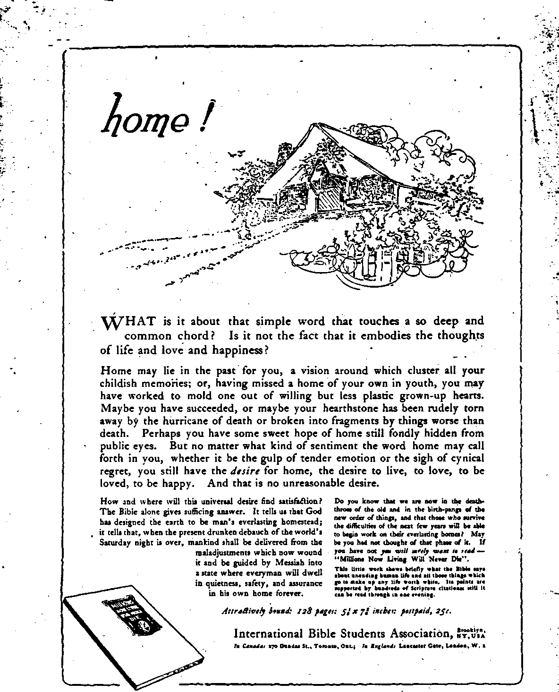

Hay 25,1921, VoL U, Na 44
•JSB Pvbl<*X«4 every other 1F£1 wee* a* 3S Myrtle Acvnue, XUf Brooklyn, 2T. T, V. S. A.
Ten Ceuta » Copy— *2.00 a Tear
CuAdx uo l*u«i<a Coaatrt««, tXflt
Twna I
WHDNBBUAZ. MAX 23, 1021
X UMMB 44
CONTENTS •/ «• GOU)EN AGE
ashkolyobd and hubhandbt
SOCIAL AND EDUCATIONAL no ZafUah Pna ..... _ . m England la Tun* of Btna* m
RELIGION AND PHILOSOPHY bio 8ua aad Pin WorrfllP—_B04 — ■ BOB Sanlruails WanhljMd1 111 km - Varloua Nano*__BOT
. _ °™ OHela at ■*» WnMih, HOB
Warimp
aad Bun
•t th* niMM n ______________BOB
Fvblbbod ,ni7 o*b«r <»di«day ■! ■ Mntla Anni, (Boro of Brooklyn! Naw York, N- T. hr WOODWORTH. BUDOWGS t»d MABW4 CLAYTON J. WHODWORTH ...... UIem aCEERT 1. MARTIN .... Ba«h»l MuM.r WM. r. HUDG1NG3......Sa*1 Md 1r<M.
Coparam aad pnanaCqn. Addrm: a larrtj. Ar*aa«, Utaro cm Br«aujrn) h«v fork. N. X, Tin Certs a Cori —12.00 a Iu>.
foreign orricss : ffHlUA : 34 Craran T*rru«a, Laaeuattr Gun. London W. 3; Canadian: ITO Dundu BL W.. Toronto, Ontario: Audtralutan: 403 Cotllu St.. Melbourne, AnetnUn.
Mal* remlttaneon to n« Goldme
Penonal ch*cka not accepted.
w ni.i.l. M WiiHa.. w. r-
wM-a. a*. «r a mf.
VaiuaM n
Brooklyn, N. T., WaduMday, May 23, 1021
Ntuaber 44
IT IS a pitiful commentary on the wisdom of mankind that when America has greater crops than ever before known there are almost sure to be twice as many people in the land in need of food as there are when the crops are small. This has worked out after this fashion so many times that one United States congressman has made the statement in print that he does not know how the farmers of the country would get along if it were not for the pests that ruin portions of the crops every year.
The production of food in the United States is not decreasing; it is increasing. The average grain, potato, peach, pear and apple production per year from 1911 to 1915 inclusive was 5,820,510,000 bushels, while for 1919 it was 6,183,171,000 bushels. In 1920 the production, was unprecedented, the combined yield of the ten principal crops running thirteen percent above the average for the five years preceding; and the corn crop was so large that it did not pay to gather it, and yet in Connecticut hundreds of school children are starving.
Since 1916 the value of the agricultural output of the United States, expressed in terms of that wobbling thing which we call the dollar, has each year exceeded twenty billion dollars. In 1919 the total was nearly twenty-five billion dollars: hut in 1920, with larger crops, the value was estimated at $19,856,000,000, or $5,105,000,000 below the total for the preceding year.
In the month of May, 1920, a general scare was sent out ' through all the papers of the country that owing to the shortage of farm labor there was a practical certainty that the whole country would be faced with a food shortage. As late as June 15th the publisher of Farm, Stock and Home, of Minneapolis, was urging the conscription of farm labor, so that the food supply of the country should not be menaced; and ou the same date the then governor of New York State appointed-a Farm Labor Committee having as part of its mission "the economic problem confronting the farmer, in order that there may be a fuller production of food stuffs”.
Within a few weeks from that time farmers all over the country were complaining that they had lost money on their season’s work, and if they had been able to secure all the help desired their losses would have been greater. In Alabama the farmers in 1920 harvested four hundred thousand tons more of the commodities which feed and clothe the world than they did the previous year, and received $128,436,000 less for their work. -
UNCLE SAM’S farmers own one-third of the nation’s total wealth. The value of farm property is now estimated as in excess of eighty billion dollars, which is five times the value of all the railroads, twenty times the value of the iron and steel industry, and forty times the value of the textile industry. This farm value has increased sixty-five percent in the past five years and fivefold in twenty years, expressed in terms of the dollar, which wobbles with every wobble of the stock market.
It is generally conceded that, barring fire or other calamity, the farmer is more sure of his home, food, clothing and reasonable comfort than any other worker; and yet the farmers themselves, and many others on their behalf, do not regard farmers as properly paid, when the investment and the labor are taken into consideration.
The average returns on the farmer’s investments increased from four percent in 1913 to seven percent in 1918, which was the farmer’s banner year; and the fanner’s cash reward, over and above the products of the farm used
by his family, was less than live hundred dollars per year for the period. This about equalled the average annual income of the urn us trial workers for the same period. Government fig. ures for 1918 showed that the average net labor income of all the farmers for that year, including all the members of the*farmers family, was twelve hundred dollars. '
Detailed figures of farm incomes compiled by the Department of Agriculture in twentyeight representative sections of the United States shows that the average American farmer cleared $9.61 per week for his own toil. On one hundred typical Indiana farms the farmer averaged for seven years an annual wage of $558, after allowing five percent for capital invested and giving his family the produce the_y directly consumed on the place. In Wisconsin a group of experienced farmers made a study of their neighborhood, and came to the conclusion that every capable, industrious man in the neighborhood accumulated ten thousand dollars more of property every ten years.
Capitalists in other lines can show much greater returns than this, but workers cannot; and nothing is gained by pointing out that the average wage of the farmer is less than half the average wage of carpenters, bricklayers and other skilled city workmen. The latter must spend a fourth of their wages, or more, for a roof over their heads, and another fourth, or more, for the food which the farmer raises on his place, so that the net result is about the same, except that the farmer can accumulate property and does do so.
Comparing the farmers with other capitalists it is very evident that they do not obtain adequate returns on their investments as compared with what others receive. There is scarcely any other large industry in the country that has not brought forth large fortunes for some of the most energetic in it, yet the intelligent handling of a farm affords as great an opportunity for executive ability as is needed in a mercantile or manufacturing business, and a much greater . opportunity for hard work.
In the year 1919 three hundred and fifty thousand corporations in the United States made net profits twenty-five times greater than that of the seven million farmers. It took five hundred farmers to make, as much as one of these corporations. The profit of one coal company during the World War was 7,856 percent. 7
TN 1920 the average farmer lost over a thou
sand dollars on his crop. The crops were the . most costly to produce in American history but -when they were marketed the prices offered *-were thirty-three percent-below what they were at planting time. The sudden drop has left the farmer with a heavier burden of debt than he has carried for a long time; and it is said that about one-fourth of them are virtually bankrupt.
Much of what the farmer raises is fed to his' stock. The balance which he eould sell for cash . brought him about sixteen billion dollars in 1919, but in 1920 this amount was decreased by five and one-half billion dollars.; and if the decrease in the "value of live stock products be . taken into consideration the farmers suffered a setback in 1920 amounting to eight billion dollars. Most of this huge loss has bfeen absorbed in profits by middlemen before the ultimate consumer was reached, so a considerable part of the farmer’s capital and credit has been transferred to those who already have too many favors at the hands of those who have capital to supply and credit to extend.
With one-third of. the country engaged in _ agriculture, the rest of the country does twelve and one-half times as much “business”, much of it consisting in swapping the farmer's products back and forth, always at a profit, and seldom to his ’advantage or to the advantage of those who must.eat or wear what the farmer produces. - '
So severe were the 1920 losses that in Texas, Kansas, Illinois and Iowa the percentage of decreased valuation of farm property amounted to. between forty and forty-five percent. Lands in the Mississippi delta which brought $400 an acre but a little more than a year ago are now selling for $100 an acre, and mules which then brought $250 can now be bought for $75. . There is' some danger that in 1921 these losses . _ may actually produce the food shortage which was predicted for 1920. Fanners can hardly be blamed for not wanting to lose the increased value of their lands by producing crops at a loss; and as the farmer can always produce enough to keep himself and his family, he has it within his power to create a situation more
terrible in possibility than it is in probability.
•" TT IS a new experience for the American •" A farmer to find his own market invaded; but the invasions have been so serious that during the first eight months of 1920 the import of r . foodstuffs was almost exactly the same as the export, and in the month of August the imports •actually exceeded the exports to the amount of , $55,900,000. This means that the high prices ruling here attracted agricultural products from other countries to such an extent as to make the foreign markets of American farmers » valueless to them.
For the fiscal year ending June, 1920, the United States imported the equivalent of twen-1 ty-five million bushels of unshelled peanuts. It is estimated that in the year 1920 the southern farmers lost from twelve million to fifteen mil-f lion dollars due to the importation of peanuts from China. It goes without saying that the J farmers or the south are no more able to. com-
1
i
1
1 t
pete- with coolie labor than is any other industry.
In July, 1920, one steamship brought into New York more than four million pounds of Danish butter, and for a long time it came at the rate of a million pounds a week. This is. the more remarkable, coming from Denmark, because at the close of the war she had few cows, not having been able to raise enough feed for them, or to buy it from the United States during the war. All this recovery has taken place in two years.
During the winter just past it cost $1.23 per barrel for the Maine potato growers, in the famous Aroostook district, to land their potatoes in New York, while Holland potato growers placed them on the dock in New York for twenty-five cents a barrel. In the sama winter months four hundred carloads of finest lemons were dumped into a gulch near Los Angeles because they could not compete in price with the lemons of southern Europe. The freight charges killed all prospects of selling these lemons even at cost.
One reason why the American farmer is now _ in trouble is that, theoretically, he has a free-trade market to sell in, all of his products being sold at a price which enables them to compete in the world's markets with the competitive products of pauper countries* But actually, in 1920, he had no foreign markets at all, as we have seen, and was at the greatest possible disadvantage because his own natural market in the United States was invaded.
The only good his foreign market did in 1920 was to fix for his products a price so low that he could not sell them for enough to pay for raising them. Then he had the double disadvantage that everything he needed to purchase was bought in a lane which has now for its manufactured articles the highest prices of any country in the world. Protection has protected the manufacturer in America, but it has not protected the farmer. To this we must add the further fact that the fanner has had to pay the highest prices for labor, due to the scale of wages fixed for the protected manufacturing industries.
During the years 1918 and 1919 the prices of farm lands throughout the country went up and up; and those who bought farms during those years, at three hundred to four hundred dollars per acre, are faced with ruin unless the farms were bought outright for cash. At the prices agreed upon the new owners can never hope to pay for them, and the holders of mortgages on such investments have almost as much to worry about as the ones who did the purchasing.'
OF THE total land area of the United States twenty-five percent is improved, ten percent is arable forest or cutover land, three percent is swamp land which needs to be drained before it can be used, two percent is irrigable land, four percent is improved land other than wood land, twenty percent is adapted to forestry but not to general agriculture, thirty-two percent is suitable for grazing purposes, two percent is desert and two percent has been used for city lots and railroad rights of way.
The improved farm acreage of today is 293 percent of what it was sixty-five years ago. In 1920 it was divided into 6,449,998 farms, ranging in value from six dollars an acre for grazing lands to eight hundred dollars an acre for highly developed orchards and truck gardens.
But there is an ugly side to this matter of improved acreage. One-half the once tilled land in New York and New England now 11m idle.
, W’-'
■ Those who first farmed these lands sold the fertility off without replacing anything, the low prices obtained for their products not enabling - - - them to purchase the needed fertilizer. . . • The recent census showed a net decrease' of one hundred thousand farms in New York, • Pennsylvania, West Virginia, Ohio, Indiana, » Illinois and. Michigan. There are twenty-nine . thousand abandoned farm houses in Ohio as compared with eighteen thousand a year ago, ■ and seven men leave the farm everv year to one that returns to it This is a serious situation. In Iowa there are 3,732 fewer farms . • than ten years ago, but there are 44,071 more • in Montana, showing the drift of the farming • papulation toward new lands. In the year 1920 eight and three-fourths percent of the farms of t - Michigan were wholly idle, with 30,300 of the ' houses abandoned. ,
IN ONE county in Illinois twenty percent of the farms are owned by men who have never seen them, and who live on the Atlantic sea* board. They toil not, neither do they spin, and
t Solomon never had a softer time in his palmi
est days. Any improvements on these farms » must be made by the renter himself. Sixty per-
4 cent of the farmers of Iowa are tenants, most
of them paying an annual rental of twenty dol, lars an acre. Unless these farmers make plenty of money they cannot get along: yet in 1920 ‘ they raised wheat at a cost of $1.88 and sold it at $1.45 a bushel, and raised corn at 75 cents, which they sold at 45 cents.
< Of the farms in the Mississippi valley 60 per- cent are worked by tenants; and DeKalb County, Illinois, has 72 percent. Stunner.County, Kansas, has 55 percent of tenants. In Mississippi 66.1 percent of the farmers of the state are tenants; in'Georgia 65.6 percent; in South Carolina 63 percent. Of the land in South Caro-
1 lina 68.7 percent lies idle. Negro owners operate one-tenth of the farms of the state. Taking the country as a whole it is estimated that 37 percent of all farms are operated by tenants and 9.3 percent more by lessees, so that nearly half the land under tillage is being worked by persons other than the owner.
Soil ownership is the foundation of social • order. Take the land away .from the people, and you have another Mexico. When a man owns property he is not inclined to turn Bolshevik. Lenine and Trotsky lost the support of the farmers in Russia as soon as they divided up the great estates among them. This is an economic law which other laws cannot change. It is inborn in hitman nature. These conditions make it highly desirable, if not necessary, that tenants should be able to get out of debt in a reasonable time and become owners of farms on their own account.
A tenant does not feel at home on another man’s land. Unless he has the prospect of owning the farm which he leases he has no inducement to build up and maintain the soil of the farm. If he cannot make money he has no permanent interest in the upbuilding of a community, and hence is not so good a citizen as an owner. In some sections the net return on farm lands is only three’ percent: and it is an impossibility for a farmer who is in debt to make enough to lift the mortagage, or even to . pay the interest on the mortgage already existing, without- cutting into his capital. The present outlook for tenant farmers becoming owners is not bright. ,
IN THE year 1915 the countries of the world producing more than fifty million bushels of wheat each were as follows, in the order of their production: United States, Russia, Canada, India, France, Austro-Hungary, Italy, Argentina, Germany, Spain, Roumania, Great Britain and Turkey. The United States and Canada together produce-one-third of the wheat of the world.
Not all of the United States is. as favorably situated for the production of wheat as North Dakota. In that state, during the past fourteen years, by means of crop rotation, good seed and good cultivation, the increase in wheat production per acre has been fifty-four percent, and they have made some profit even in bad years. Eleven years’ data on farms at Bathgate, Larimore. Hoople, Portland Junction and Wahpeton, North Dakota, all in the Red River valley, show that the average annual income at these places, exclusive of any cost for land rental or interest on the investment, was $16.32 per acre per year. This is the interest at six percent on land worth $272 per acre. - '
The Government investigated the cost of pro-
-• dosing the 1919 wheat crop on 481 farms scat-r tered widely over the wheat-producing areas, _ and found the average cost to lie $2.15 per i . bushel. In that year the Government was guar-f ’ anteeing the fanners a price of $2.26 per bushel, and at that price one-half of the farmers who raised wheat raised it at a loss. On twenty of r' the 481 farms the cost of raising was over five dollars per bushel. On two of them it was less ;than one dollar per bushel. .
Farmers have taken wide notice of the fact ' that there is a great disparity between what
# they receive for their wheat and what others . receive. A Senator in Washington made calou-
1 - lations which showed that when the farmer was
t getting $8.37 for the wheat in a barrel of flour,
the miller was getting $12.70 for the same wheat, the baker was getting $58.70 and the Washington hotel-keeper $587.
1.." Another Senator calculated that a 196-lb. . barrel of flour produces three hundred sixteen-
1 ounce loaves of bread owing to the water, salt 1 and other ingredients used; and his figures showed that when a barrel of flour is made r into bakers’ bread the farmer receives one-.fourth of the retail price of the bread, while
1. the other three-fourths go to elevator men, ,' millers, jobbers, wholesalers, bakers and retailers. In the year 1920, a most disastrous year for wheat growers, the Northwestern flour ' mills made profits of 44.7 percent, and during
■ the preceding five years their average annual
. profits were 24.4 percent.
THE price of wheat is “fixed” in Liverpool and Chicago. Theoretically the price is what . it is because a fairly constant supply, from both the Northern and Southern hemispheres and from wide ranges of climate, is pouring into the markets of the world, the chiefest of which is Liverpool, the principal port of entry for the world's greatest consumer.
The United States produces a surplus of ___wheat. Theoretically that surplus is sold in ! Liverpool at auction, and the price which it brings is the going price for all the wheat raised in the United States. Various things conspire, however, to prevent the carrying out of this theory without more or less interference.
The American farmer is a long way from his Liverpool market. Not merely is he confronted with the fact that transportation and elevator charges are all subtracted from the amount which gets back to him, and that he has limited means for controlling any of these charges, but he is peculiarly helpless as respects the Liverpool price. If arrived at by a conference in which he was in some way represented he could have more confidence in it. The prices are really fixed by great financial interests that have a controlling “say” in governmental affairs.
Even in normal times it has been learned that surplus manufactured goods have been sold in foreign countries below cost, while the very highest prices were charged for the same goods here in America. The knowledge of this fact, and the certainty that he has paid the high prices for the manufactured goods sold in the American market, makes the farmer wonder whether perhaps the same principle may not be working in the case of the wheat surplus, except that in this instance there is no way of holding up the domestic price.
During the years of the war the price of wheat was admittedly fixed by collusion between the governments involved, and arbitrarily fixed in such a way as to encourage wheat production in Britain and to take into account the increased costs in the United States as compared with Australia, and even with Canada. In 1917, when the government-fixed price of British wheat was $2.24 per bushel, the price of Australian wheat landed in Britain was 72 cents less per bushel. The knowledge of this difference was kept from Australian growers by means of the censorship.
At one and the same time, when the British Government was paying $2.40 per bushel to American wheat growers, it was paying but $2.20 to Canadian farmers and as low’ as 96 cents to $1.14 per bushel to Australian farmers. The compensation of the Australian farmers was kept down by juggling the freight rate, which, 45 cents per bushel between Australia and England according to the British Blue Book, by a system of bookkeeping on the part of the Australian goveriunent was made to appear as if 96 cents.
American governmental-control of prices of wheat and flour was relinquished at ’’.e end of May, 1920, and straightway the pric f wheat fell. From July first to November firs, the price dropped from $2.53 per bushel to $1.83. The explanation offered for this is that the world has not the purchasing power tb buy $3 wheat, and that Britain diverted her wheat orders to Australia. India and the states along the Danube, whenever possible, where she could get snore forTier money than in the United States.
The key price to farm products is the wheat price. As wheat goes, so go ail products of the farm. Corn and oats fall, if wheat falls, and rice, cotton, tobacco, and finally garden produce slip down the price hill. A. special attack was made on wheat in 1920, which by a hidden fraud rapidly depressed the price. Like other international products the lowest price in the international market is the price for the whole' world. Wheat comes largely from India, Russia—formerly—Hungary, Argentine, Australia, New Zealand, and the United States. If the price of wheat could be forced down in one of these markets the others would follow.
It happens that in the Argentine wheat market there are practically only five large buyers, England, France, Holland, Germany and Belgium, who deal through five firms, which control absolutely the Argentine market. If the relatively small amount of wheat from Argentine could be forced down in price, the immense . amount L'rmn the United States would fall. So these fiv • countries conspired to force down Argentine wheal. For days at a time they would <-oi:o^rt? Uy stay out of the Argentine market, and from lack of demand the wheat offered there on those days would drop in price as much as six to nine cents, a bushel. At the same time the buyers of these countries refrained from buying in the great Chicago market for wheat, thus creating a situation in that market peculiarly susceptible to a low foreign price. Thu.- by fraud under the lead of Great llritain, the largest buyer in the great wheat '•onsniracy of 1920, the price received for wheat by the American farmer was depressed with unprecedented rapidity, and with it went the other grains and the rest of farm produce, to die ruin of hundreds of thousands of farmers who got almost nothing for their crop but hard work and a loss. ■ „
Tills job was pulled off by rich men, and it was to this class that the" Apostle James by inspiration addressed these burning words: “Go to now. ye rich men . . . Ye have heaped treasure together [not to keep but] for the last days.
. . . Behold, the hire of the laborers who have reaped down your fields [the farmers], which is of you kept back by fraud, crieth [for divine vengeance]: and the cries of them which have reaped [the farmers] are entered into the ears of the Lord of Sabaoth” (Greek, armies—this time the rich have done it once too often; God is now paying attention to their treachery, and the great armies of .the Lord—the politically embattled farmers and workers are already on the march against their oppressors, determined now that such wrongs shall be no more forever).—James 5:1,4.
Wheat Speculation
IN THE Chicago Board of Trade, in October, 1920, more wheat was sold than was raised in the United States during the entire year, and the corn crop was sold fourteen times in the same place before a bushel of corn had’ reached the markets. These speculators know just when the farmer must sell, and they take advantage of the farmer’s necessities to gamble away his profits by trading in what are called “options”, covenants to deliver a given quantity of grain at a given price in some future month. Farmers have under agitation plans to prevent this option trading, a thing that was done of its own volition by the Government during the war, and until July 15th last.
The maintenance of the system of fixing the price of the farmer’s products by gambling on the stock exchanges results in low prices to the farmer, high prices to the consumer, and an easy living and vast profits for the speculators. The system has its defen<b-KS. The. claim is made that the speculator tends to stabilize prices, and that fluctuations am always gr.mvr in markets where there is no organized speculation. For example, it is pointed out *’e:t in London, in 1335, before the days of Bear,’s of Trade, wheat sold for' ten shillings a bu.db l, and that the following year, on account of unusually large crops, it sold for ten pence a bushel. The devil "never hesitates to go back six hundred years, or longer if necessary, to find some excuse to justify -his Satanic majesty’s way of doing things.
Saving Sortie of the Profits
IT IS evident that some one must hold the hulk of any crop until it is consumed, and the farmers claim that there is abundant evi-- deuce that the wheat crop could not have been . in more unscrupulous hands than the gang of gamblers and “bankers” that have heretofore directed its disposition. It is their claim that the age-old custom of rushing farm products to the market has played into the hands of the speculators who, having forced prices to the lowest point, stocked up heavily. Then, as the prices advanced; they received the profits which . the farmers had been previously forced to lose.
These speculators are always ready to advance . ..their prices after they have the crops in their hands, but only the most urgent of reasons can cause a reduction of ever ? o little.
An evidence that there is money in holding ■ back wheat until the time for consumption has arrived is afforded by the fact that in numerous instances where farmers have gone in together . for cooperative grain elevators, the elevators have made a yearly interest of thirty to one-hundred percent on the investment.
Two of the largest elevator systems in Cana-’ da are owned and operated by fifty-nine thousand farm shareholders. These are the United ,Grain Growers and the Saskatchewan Cooperative Elevator Companies. In addition, the Dominion Government has storage elevators with a capacity of eleven million bushels.
Throughout tin? districts served by these seven hundred cooperative elevators, the farmer first brings in his wheat and receives a certain price. Later in the year, as the price becomes more definitely fixed, he gets a little more: and at the end of the year he gets the balance. By this method the man who raises the wheat gets the .full price for it, instead of having the profits diverted to the pockets of speculators.
Farmers of the United States have now taken up this matter of cooperative elevators in earnest, with prospects of interesting developments within the next year or two. Such an elevator company was organized at Twin Falls, Idaho. Octolier 11. 1920, and doubtless in scores or hundreds of other places.
Meantime, the farmers have undertaken to accomplish something by going r\t things in a ’ cruder and less effective way. Tn North Dakota twenty-three banks were forced to sit down and wait quietly, with Hosed doors, until the farmers got ready to sell their wheat, which, at the time of our information, they were re
fusing to part with for less thau $2.50 per bushel.- .
At the end of December, .1920, seventy percent of the farmers of Nebraska were still holding to their wheat, waiting for a three dollar price. There is a risk in all this, however, along with the chance for a profit; for as soon as Canada, Australia, Argentine and other wlieat-produeing countries find an artificially good market created by the withholding of American wheat, they are bound to take advantage of the situation to rash their own products into the void. '
In Kansas, in December, there were seventyseven million bushels of wheat stored, waiting for a better price. It makes the heart ache for the promised kingdom of God to read that at that same time twenty million people were starving in China, parents were selling their fourteen-year-old girls at four to five dollars each, to lie taken to the cities and placed in brothels: and as they themselves left their pitiful hovels, to starve by the wayside elsewhere, they were tying their younger children to the trees so that the little ones co.uld not follow them. We have starvation in New England, too.
People who glibly quote, "God’s in His heaven, all's right with the world”, should use their brains and learn that we are now living in the time of Satan's kingdom, not Christ's kingdom, and that the whole trouble with the world is that the Desire of all Nations is not yet in control. But cheer up. the Dawn is near!
Farmers who are trying to extend their marketing ’periods have good Biblical authority for the storage of food in times of plenty, as witness' the story of Joseph, who saved the surplus in the seven years of plenty to last over the seven years of famine. As far as the consumers are concerned, they would be quite as well pleased, and their intere.-ts quite as ’.veil cared for. -if the storing of grain were done by the farmers until the time of consumption, as they would if do::-* by those financial interests which have so abundantly proven in the recent past that they cannot be trusted in Hiiythini} which has to do with the welfare of the people or tn any statements whatever that they mak -*. Many countries of the world arc short of I;,-at. but do not have the money to buy. This is true of Germany, Austria and Armenia.
IN Golden Age No. 37 we have discussed the
Banking and Pawnbroking question at quite some* length, and made .'<>me reteieuc . attitude of the Federal Reserve Bank toward the farmers. It here seems advisable to extend these remarks; for it seems evident that the farmers will never receive from this institution, in carrying tlveir products until the markets are ready for them, the assistance that has been and is being freely granted to the jobbers and wholesalers after the farmers’ products are in their hands.'
The Federal i».eserve Bank is a pruately-owned institution controlled by Wall Street bankers. Under the law the Secretary of the Treasury is the chief officer of this system. When in the winter of 1920-19’21 the farmers oame to the then Secretary of the Treasury, asking his consent to the principle that warehouse receipts, based on the products of the farmers, should be made the basis of credits to be granted to the farmers by the Federal Reserve system, he refused point blank, though he consented that those same products, after they had left the farmers’ hands, should be used as the basis of credit to the plug-hat gamblers and profiteers that have done so much to ruin the world.
The Federal Reserve system was found adequate for the financing of America and her allies during the war, but credit to the farmer has been restricted and the rate of discount on farm products has been raised. The banking resources of the United States were stated by the Comptroller of the Currency to be >53,079,-108,000, and as America is the credit-reservoir of the world it is passing strange that the temporary support of credit on the perfectly liquid assets of farm produce between harvest time and time of need should be beyond its powers.
The banks, including the Federal Ib-serve, have profiteered all the time, and are >till profiteering. More than a billion dollars was Ijeing loaned on Wall Street as call money at the very time when the yeomanry of the great West were vainly seeking to hpld' their products a little time for a better price. A crop represents a whole year’s work to the farmer; and if he has no credit and has to dump all his products on the market at once, and take what is offered him at the time the price is lowest, he is treated most unfairly.
The proposition recently made to transfer the one hundred million dollars of profits of the Federal Reserve Bank to the farm loan banks, and thus aid the farmers, is like expecting a man to get well by sucking the wound from which he is bleeding to death, and then swallowing the blood. To get the point of this remark, take note that in Iowa and other western states, in October, the banks were demanding a twenty-five percent discount on farmers' eight percent notes.
Since the war the situation calls for more money to the average man, and a greater distribution of money than ever before; and the efforts of Big Business to force things back to where they were before the war can succeed only in throwing farther out of joint conditions which were already sufficiently disorganized.
The Federal Reserve Bank began the policy of restriction of credit early in 1920, and the business of the country went down before that policy like a house of cards. It may be good business to ruin the country’s business so that the business of the country will not be ruined by some other means, but there is a vague suspicion that the financial interests which seized billions in profits during the war are now trying to double those profits, already capitalized, by making every dollar twice as valuable as it was when the profits were made.
Some of these men are frank in saying that the job was badly overdone. Some in the Federal Reserve seem to have sensed the same thought. The Chicago branch of that institution requested the farmers of Iowa to accept their losses and pay the Iowa bankers what was owing to them, because the Iowa banks were then short of money and would be until the farmers sold their grain and paid up.
The financial interests have the farmers at their mercy in another way. There are three groups of bankers in Wall Street who dominate the 207,000 miles of railroad in this country. These railroads wield a crushing power over the farmer. They are now squeezing him as never before. The rates are sky-high, so high indeed that many shippers now send thmr goods by truck rather than try to use the railroads at all.
The War Finance Corporation might con-
eetvably have been of some help to the farmers. . At the time it was dissolved it had in hand • applications amounting to one 'hundred million dollars for the export of copper, steel, tobacco, ' cotton, coal and ships, backed by prominent bankers of Italy and Czecho-Slovakia.
DURING the year 1920 all kinds of live stock
—horses, mules, cOws, steers, sheep and hogs — decreased in numbers in the United States, and the decrease in their values over the previous year was $2,250,000,000. Part of this decrease is due to the fact that Europe and America cannot afford to eat much meat, and the American farmer could not therefore afford to raise it; and part is due to the fact that other countries are raising meat in larger quantities than previously.
Before the war Brazil exported annually les? than two million pounds of meat; in 1919 it exported two hundred and fifty-one million pounds. Before the war British South Africa exported five hundred thousand pounds of meat; - in 1919 it exported forty-six million five hundred thousand pounds. .
What is true of wheat is true of meat The farmers do not receive as large a proportion of the consumer's dollar as they should. There are towns in the United States where there is one meat dealer to every four hundred of the population. These dealers take large profits on their sales, and even at that can hardly make a living.
. Five farmers, visiting Washington, D.C., in an effort to have something done for the farmers, paid eleven dollars for a modest meal consisting of steak, potatoes, com, bread, butter and coffee,with no dessert and no tip; and when they came to figure it up found that the farmer who had produced the food had received just eighty-two cents of the amount At that time, ' within a few miles of the capital, Virginia steers were selling at eight cents a pound. -
Reports of government experts showed that in DeKalb County, Illinois, only sixty miles from the plants of the millionaire packers of Chicago, in the season of 1918-1919 only forty percent of the cattle were produced at a profit, while during the 1919-1920 season only five and one-half percent were produced at a profit
In November a ship arrived in New York with one hundred and fifty thousand carcases of New Zealand lamb at fourteen cents a pound, which is less than the American farmer can raise it for, and possibly less than the New Zealand farmer himself can raise it for. The effect of that shipment, and the attendant circumstances, was that two thousand sheep sold in the Chicago stockyards at a price which netted the shippers only thirty-four cents a head, and a fanner near BlaisdeIl, N. JX, who shipped twelve sheep to the South St Paul market received a net return of three cents for the twelve.
On the demand of the Government, and with a view to lowering the cost af Jiving, the packers knocked the. bottom out of the hog market in the Fall of 1919, and thousands of American farmers went bankrupt Thie alius^ter of the farmers was followed by/an a&trance of eleven percent in the price of t. baogtt 'During the months that followed, tike retaWprices of pork and pork products actually advanced while the wholesale price of pock onjho hoof was falling nearly one-half.; H '
In June, 1920, to show the gait that the profiteers had struck and were still keeping up, the farmer was getting $5.50 per hundred less for his pork than the year previous, and the retail prices of ham were $3.00 per hundred more. A farmer near Baltimore sold his pigs at seventeen cents per pound, and chops from these same pigs were delivered to his own home and charged at forty-five cents a pound. In January, 1921, hogs weighing two hundred pounds each were being sold for nine dollars apiece.
As late as April, 1920, the farmers still had great hopes of making money in meat At that time, in Villisca, Iowa, a pure-bred Poland-China sow, which had been bought fifteen ' months previous for $265 was sold for $40,000. It was a bad buy for the second purchaser.
over was
THE Hide and Skin companies have been * taking hides of the farmers recently at a price that is illuminating when we ponder the propaganda with which the country flooded only a little while ago to justify the outrageous prices for shoes. A few illustrations tell the story:
J. W. Patton, Rayville, Mo., sold a hide at five cents per pound. The hide brought him -$2.80; for it weighed forty-six pounds. On the same day Mr. Patton had his shoes half-soled, the leather mi&Ung perhaps a pound, and paid $1.40 for the jidfewa wonder what Mr. Patton thought that night when he went home with his ninety cents, his munificent reward for skinning the cow and taking the hide to market
A subscriber in Pennsylvania reports sending a calfskin and a Iiorsehide, both large, direct to a tannery company. For these two hides he received $2.50 net, after the expressage of $1.25 had been deducted. Shoes ought to be cheap at that rate.
We have before us an invoice or credit memorandum of the Southern Hide and Skin. Company, Jacksonville, Florida, made out in favor of J. W. Moffitt, Hallandale, Florida. It allows five cents per pound for one green-salted hide, ostensibly weighing thirty-five pounds. The word as we got it from Mr. Moffitt, through a friend, was that the hide weighed very much mote. It had been cured by having not more than a pound of salt rubbed into it When the hide arrived the Huie and Skin Company "deducted” a weight not stated for the salt in the hide, "deducted” ninety-seven cents more for freight charges, and rewarded Mr. Moffitt with seventy-eight cents for skinning his cow, curing the hide, wrapping it up and shipping it to Jacksonville. •
We thought this so rich that we wrote to the Hide and Skin Company inquiring whether they had any securities on the market of interest to investors; but they must have smelled a rat among their hides somewhere, for the letter that we longed for never came. However, we did get an answer to the letter which we wrote Mr. Moffitt asking whether we might publish the ' facts about the talcing of his hide; and his letter in reply gives some more facts and shows that this first Hide and Skin Company were benefactors to humanity compared with the next crowd he fell in with. He says:
"Perhaps you better not say anything about that; for I got dissatisfied with that firm and shipped to Sabel Brothers two hides a few clays apart and received for the on<; thirty cents and for the other ten cents; I don’t mean per pound, but thirty cents and ten cents ench. They did say that the hides arrived in bad condition. which might be true or might not. One hide was shipped two hours after being taken off the animal and .-liould have been in Jacksonvillo the following morning, at most not over twenty-four hours off the animal. The other was three-or four days here before shipping, but was salted. I should have kept both hides longer; for the one I kept the longer brought the higher price. No! I don’t care what you say about it; you have the facts, only the income tax man might get next to the facts and get me on excess profits.”
Garland Morri ss, of Manteo, Virginia, sent a fourteen-pound cowhide to a hide and fur establishment in Richmond, was allowed four cents a pound for it, total fifty-six cents. From this amount forty cents was deducted for express, and the remaining sixteen cents was forwarded in postage stamps. This was in Jamu. ary, 1921.
W. A. Sewright, Buffalo Gap, S. D., shipped a fifty-pound hide to a hide-buying firm in Omaha, was paid six cents a pound on thirty-four pounds, total $2.04. But there was deducted $1.61 for freight and thirty-nine cents for cartage, so that the net amount received for the hide was four cents.
' H. M. Scott, Stanley, North Dakota, shipped a cowhide to Minot, N.D.; and after the freight charges were deducted he received a net return of three cents. - '
C. D. Helms, Marmon, North Dakota, holds the banner. He sent a thirty-one pound hide to the Watertown Hide and Fur Company. He was allowed four cents a pound for the hide; but the freight charges were $2.09, and the Hide Company sent Mr. Helms a bill for eighty-five cents for sending them the hide. And shoes are $6 to $16 a pair.
We hope that as Mr. Helm looks at that bill he gets joy from knowing that in the year 1919 the American Hide and Leather Company made 265 percent profit over their 1914 profits, and that in the same year the Central Leather Company made 103 percent over their profits for the previous year. The accumulated profits of Central Leather Company rose from 7j millions in 1914 to 30J millions in 1919; the dividends of the American Hide and Leather Company common stock were thirty-five times as great in 1919 as in 1915, when they were ample; and the profits of the great Endicott-Johnson Shoe Mfg. Co. were $9,791^580 in 1919 as against $2,174,430 in 1915. The cost of the leather in a shoe is about one-sixth the price of a shoe.
Speaking of hides, the profiteers skinned the farmers and the rest of the people alive, and then were in deadly fear of the shadow of the penitentiary for their offenses under the Lever
Act. It was needful to keep attention off from themselves; and through their newspapers they . kept up a succession of roars for**Americanism” against pro-Germana, Bolshevist., and Reds until the Supreme Court decided they had not violated the Lever Act. No further need of a smoke screen, and the newspapers are again about the domestic business of maligning the NonpartisanLeague and other away-from-Wall-- Street movements.
_ Milk, Butter and Egg»
IN New York, when the consumers were paying sixteen cents a quart for milk, the producers were being paid six and one-tenth cents a quart In Chicago, when the consumers were paying fourteen cents, the farmer received five - and two-tenths cents; and in Omaha, when the consumers were paying fifteen cents, the farmer was receiving six cents a quart. The farmers think that this is too great a gap.
The warehouses about New York are crowded with condensed milk and evaporated milk put up when sugar was twenty cents a pound. This milk is held—until rotten—to be sold at fifteen cents to twenty-five cents a can, and cheaper milk and cheaper sugar now in the market are being refused by the manufacturers until the old product is worked off at the war-prices- at which it was made. In the meantime the consumer pays high prices, the farmer has no market for his milk and must kill his cows for beef at a time when the beef market is all shot to pieces.
When butter was selling to consumers at eighty cents per pound, the producers were being paid but forty-five cents. In January, 1921, the farmers in Tennessee were being paid only twenty cents a pound for their butter.
•EaHy in January twenty-one carloads of eggs •frbm China and three carloads from Japan came through in a solid train from Vancouver. These eggs came through in twenty-one days from Japan to Vancouver and in ten days more were distributed, twelve carloads in New York, seven in Boston, four in Philadelphia. They arrived just in time to command a winter price of sixty-two cents, but the arrival caused a drop of ten cents a dozen in the wholesale market.
In the same special egg train came four cars of choice California eggs, which find their way into the New York market through a cooperative society. This society makes a specialty of shipping the eggs in a uniform and attractive mann^.
On February eleventh, when the finest graded California eggs were selling in the wholesale market of New York at forty-three and forty-four cents per dozen, retail grocery stores in New York, operating large chains of stores, were charging the people eighty-four cents a dozen for the same eggs; and as eggs make up twelve percent of the business of the average grocery store the people may judge whether or not they'were fairly treated.
ONE of the concerns that stood out with“100 percent [profit] American” distinctness during the war was the American Woolen Company. If you had known how this company intended to stand by Uncle Sam in his hour of need, and had invested one hundred dollars in its shares in 1914, you would have drawn out $459 in dividends during the next fivo years and could then have sold your stock for $1,204. Uncle Sam got after this concern for profiteering at his expense, only to find, by the decision of a wise judge, that woolen cloth is not woolen clothing, and that therefore no way existed under the law to make the chiefest of all cloth profiteers disgorge. ’
Now let us see what follows. The wool manufacturing interests must, have sold, out an enormous quantity of wool, bought at a low price and sold at a high price, in order to have caused Uncle Sam to cast a suspicious eye at its enormous profits. Having sold out the Govermnent and the people at such outrageous prices that suits of ordinary clothing sold in the retail stores at one hundred dollars a suit, what would be its next policy? Why, of course, to lay in another enormous stock of wool at a low price. How can this be done? Use all influence with banks (and people who have cleared millions of dollars in profits always have plenty of influence with banks) to curtail the credit of the farmers so that the farmers will have to throw everything overboard. Then those that have accumulated vast surpluses of cash can invest to their heart’s content until another war can be arranged or a propaganda developed showing that the country is short of wool, and
1
I
1 i
i
1
«
the prices can be sent skyward again. It is all very simple; it works like a pump.
Something like this has happened. Wool prices have collapsed, and the warehouses are jammed with raw wool, the estimated total being about four billion pounds. Meantime the people are largely clothed with "all-wool" goods maae of old woolen rags, hundreds of tons of which are imported from Germany. It is claimed that the people, to live comfortably, need about twelve pounds of wool per year, but are not able now to get three pounds.
An ordinary suit of clothes weighs six pounds. During the year 1919, when the price of wool suits was $100, the average price paid to wool producers was sixty cents per pound, so that the wool in a suit at that time was worth about $8.60, not affording any too much reason for the quadruple prices charged. .
It was stated in the United States Senate that during the war, when all the women of the land were using wool in Red Cross work, and paying for it at the rate of $4.70 to $5.25 per pound, the farmer was getting for the same wool only seventy cents in the grease, or one dollar and forty cents scoured, and the yarn makers had done not a thing to the farmer’s product but to dye it and spin it into yarn at a cost of a few cents a pound.
FRUIT-GROWERS always take long chances.
If it is a good year for fruit, everybody has fruit and the market is glutted, with no profits. Fruit must be supplied to distant markets, with often a poor chance of finding a remunerative market on arrival. In the great Yakima Valley, Washington, in the winter of 1920 the warehouses were piled with high-grade apples, the bins were full of com and the fields dotted with stacks of hay for which there were no purchasers. Farmers with bumper crops were unable to raise enough money to pay the interest on their mortgages or to pay their grocery bills.
Transportation is a deciding factor. Cars must be had promptly for some kinds of fruit, or the crop is valueless. Four thousand cars of peaches and other perishable fruits were wasted in Western New York last year because the shippers could not obtain cars for their transportation. Freight rates are prohibitive.
The demand of the railroads for excessive earnings is strangling the country. Distribution in America costs, in all its items, one-fourth more than in any other country. .
Melon-growers in Colorado and the Southwest find themselves unable to stay in the business on account of the excessive freight rates. It now costs $3.07 to put a crate of melons in Chicago against a cost of $1.96 before the war. This may help melon-growers in New Jersey, at the expense of their western brothers, but there is small comfort in that? to any one that loves justice. Melons remain high to consumers. When the farmers were being paid but eight to ten cents apiece, the consumers had to pay sixty to eighty.
While thousands of cars of apples were rot- . ting in various parts of the country, the prices for apples at fruit stands in the large cities remained the same as during the war. The best apples cost seven to fifteen cents each; and in‘ the dining cars the farmer is charged the same price for one baked apple that he gets for a whole bushel on his trees. ,
At the time when alligator pears were being sold in Washington Market, New York, at three for twenty-five cents, they were being served in Broadway restaurants at sixty-five cents each. This idea of multiplying the market price of food by about eight seems to be a principle with New York restaurants. If your income is small and you 'wish anything to eat, you had better get in line on the raw-food fad now coming into prominence.
Statistics show that for a box of grapefruit retailed at six dollars, the grower received one dollar, the picker and packer one dollar, the brokers, commission men and jobbers one dollar, the transportation companies one dollar and fifty cents, and the retailer one dollar and fifty cents.
THOSE who were connected with the food administration during the war have admitted that, contrary to fact, a propaganda was deliberately started to the effect that there was a bumper crop of potatoes, so as to induce the farmers to send their potatoes to market quickly and break the price. In other words, the farmers were deliberately lied to and robbed by the transaction. In the spring of 1920, in the grocery Stores of New York city potatoes were selling at twelve and one-half cents a quart.
, At Poughkeepsie in March, 1920, the price of potatoes was so high that George Booker of Hyde Park, N. Y?, sold three bushels, and with the proceeds bought a ton of coal and had money left over. The next day he sold thirty heads of cabbage and bought another ton of coal with the proceeds, and again he had money left over. Six months later there were fifteen million bushels of potatoes stored in Maine warehouses with almost no market in prospect, and m Virginia Irish potatoes were selling for fifty cents a barrel and prime sweet potatoes at one cent a barrel.
In the spring of 1920, in the grocery stores in New York, tomatoes retailed at ninety-five cents a pound. Six months later Maryland's great tomato crop was rotting on the ground; for canners could not afford to pay anything at all for it, because the warehouses arc filled with high-priced canned tomatoes. Yet, at the very same time, hotel keepers in Boston were charging $1.70 for two tomatoes with the skins removed.
In the fall of 1920, at the very time when lima beans were selling in Boston at eighteen cents per pound, the farmers who raised them were being offered one and one-half cents per pound. In the spring of that year string beans in New York sold at twenty cents per quart.
The Bureau of Markets, of the United States Department of Agriculture, has assisted the bean growers of New Mexico to organize a Bean-Growers’ Association; and it is estimated that as a result of cooperative selling these growers have saved seventy-five thousand dollars in one year, a tenth of which was saved in buying their bags in carload lots.
In the year 1919 John J. Scofield, Wappin-ger’s Falls, New York, on one and one-half acres of land, raised all the food needed by his own family and sold $1,300 in vegetables besides. On June 27, 1920, the Department of Agriculture reported that California oniongrowers were plowing under their crops because the onions would not bring the cost of marketing. In August, 1920, thousands of crates of Cristobal Peris Selected Valencia onions were thrown into the ocean below New York city because the selling price at that time was soven-
ty cents per bushel and no demand. In the Fill of 1920, when the wholesalers in New York weri charging only one cent apiece for first-class cabbages, the retail dealers were charging twenty cents apiece for the same cabbages. •
IN Oklahoma, in the Fall of 1920, from fifty to sixty percent of the cotton crop was not picked, because it was cheaper to let the cotton rot in the fields than to pick it The cotton-ginners were charging the same price for ginning and bagging the cotton as during war time, and the price of cotton shoestrings at the local stores was fifteen cents a pair. After disposing of what cotton they did -have ginned, it is claimed that Oklahoma cotton-growers were able to pay only ten percent of their debt*.
Cotton-growers'who expected aid in carrying their crops were disappointed. Banks which had promised aid carried the producers only sixty days, but the big banks will carry the big cotton gamblers long enough. Be assured of that. And the big gamblers will figure on so steering things in Europe and America as to emerge with great profits. It is estimated that even now the world is cutting into its cotton stock at the rate of five million bales per year, and it is but a little while since the world’s cotton conference urged the South to increase its cotton production from 11,500,000 bales to 15, 000,000 bales.
Millions of pounds of cotton were bought and stored at twelve cents. The cost of producing this cotton was much more than this; and as sixty-two^percent of the cotton-producers are tenant farmers, and pay one-fourth of all they make to the landlord, large numbers of them are ruined. Those who harvested -their crops and sell them piecemeal perhaps do as wisely as is possible under the circumstances. Night-riders, are now forcing cotton-growers to cut their production in half and to agree to plant their own food on the remaining acreage.
When the cotton-grower wants cotton goods he must give up ten pounds of cotton for one pound of cotton cloth. Before a committee of the United States Senate, in the spring of 1920, * Senator exhibited a piece of gingham for which he had paid $4.50, and for the cotton In which the farmer had received twenty-five cents; * piece of voile which cost the Senator $3.4S and
{•turned nineteen and one-half cents to the fanner; a handkerchief which cost the Senator twenty-five cents, and for the cotton in which the farmer received one and one-half cents.
THE Department of Agriculture has estimated that the cost of growing tobacco is thirty-six cents a pound; and when the central Kentucky tobr co market opened on January third at Lexin .on, tobacco was sold at one-half cent a pound, equal to that sold at the same sale, the year previous, at fifty to sixty times the price.
The net profits of the United Cigar Stores Company in August, 1920, showed an increase of more than one hundred percent over August, 1919. How do they get away with this, year after year ! As previously stated in The Golden Ara, "out of every dollar sold by the General Cigar Company in 1918, 34 cents was profit, while in 1919 it was 38 cents, but this was not enough, so the price of this company's 7-cent cigars was increased to 8 cents.”
Following the collapse of the tobacco market in Kentucky two thousand growers, representatives of one-hundred thousand growers, entered into an agreement not to plant any tobacco in 1921; and a similar organization has been perfected in North Carolina. This will probably mean bloodshed, as it is doubtful whether all growers will concur.
The South has wonderful possibilities in the way of food production. Concerning sweet potatoes the statement is made that more bushels of this crop can be produced per acre than of any other, that any soil will grow a crop, that they are easy to cultivate, easy to harvest and easy to keep, and that from them it is now possible to produce 107 useful products, including four. kinds of flour, four kinds of meal, five kinds of library paste, four kinds of breakfast foods, two grades of coffee, two grades of tapioca, forty-five dyes ranging from rich orange to jet black, fourteen candies, three stock foods, fourteen wood fillers, besides starch, vinegar, ink, shoeblacking, chocolate compound, bisque powder, rubber and molasses. What a wonderful world this will be when the human family gets down to the business of taking care of itself instead of supporting international butchers—and profiteers!
_ The peanut is just as wonderful There are 145 ways of preparing peanuts for human consumption, including mock chicken, duck, turkey, goose and oyster, which, when properly done, can with difficulty be distinguished from the real meat. A pound of peanuts contains a little more of the body-building nutrients than a pound of sirloin steak and twice as many energy-producing nutrients. It is a soil-builder, bringing free nitrogen from the air; and it has a beneficial effect upon the human system.
A safe farming program, endorsed by every banking concern in Geneva county, Alabama, recommends that every farmer in that county plant six acres of cotton, six acres of peanuts, twelve acres of corn and velvet beans, two acres of fall-sown oats folio.....d by hay crop, and
three acres of grazing crops for hogs. '
THE farmers are a unit in wanting Government cooperation in farm marketing and buying, and well they may wish for these things.
As matters now stand, the farmer is getting only from thirty ,to thirty-five cents of the dollar which the consumer spends for farm products. In the month of October Government statistics showed that there was a decrease of nineteen percent in the prices paid to the farmers for their products, and a decrease of only three percent in the prices paid by the consumers.
All the way down the long line from farmer to consumer, the jobbers, elevator men, packers, millers, wholesalers, and retailers, have insisted not merely on profits, but on war profits, long after the farmer had been made to liquidate. Meantime the farmer has been paying war prices for farming implements, clothing and such items of food as he did not himself produce. Legislators might at least get together and require that the original sale price of every farm article be plainly marked on it
Since the loss of his own market the farmer has had to stop buying, with the inevitable concomitant that the city worker has almost stopped eating. The farmers are the largest buyers of manufactured products, and they cannot buy when farming is unprofitable. On account of the mild weather and slack work in the cities during the past winter the demand for food was much lighter than usual.
The farmer organization 'movement grows r. apace. Our last information showed that at that jt: thna thirty-seven states were members of the
j? Farm Bureau, with eight more expecting to join shortly, and only three states in the Union — z Alabama, Mississippi and South Carolina)—not t yet organized.
? . A million and a half farmers are already . ; members of this Farm Bureau. The organization was born in an endeavor to feed the world and bring about a successful issue at arms; and . now it is not at all disposed to go out of exis. tence, as many politicians would gladly have it do. This Bureau has the definite object in view of seeing that the farmer is carried over for ' the full year, if necessary, instead of being com-palled each Fall to sell out to the speculators and the gamblers, the bankers and boards of trade.
Having noted that the Government itself has developed a bad habit of waiting until harvest time each year and then launching a drive against the prices of the farmer’s products, 1^235,824 voters in the nine Northwestern states of Wisconsin, Minnesota, North Dakota, South Dakota, Nebraska, Colorado, Montana, Idaho - and Washington, broke away from the old ' parties in the Fall of 1920, and cast that many votes for Nonpartisan candidates for governor and a million votes for the Farmer-Labor presidential candidates. This has worried the politicians.
Cooperation is developing rapidly. Six years ago there were five hundred cooperative so' cieties in the United States. Now there are eight times that many; and in the past year they handled $1,500,000,000 in the marketing of farm products, operation of elevators, warehouses, fire insurance companies and wholesale and retail concerns. Some claim for them that they control annual products worth $7,000,000, 000,' if wheat, milk, live stock and cotton be included in the list. These cooperative societies are now purchasing machinery, lumber, coal, fertilizers, flour and butter for their members. Y California citrus growers are expending $750,
. OOOayear advertisiiijr^enlarsrin? tlioir markets.
PRESENT day methods have compelled the American farmer to become a mechanic, and • lie has done so quickly. The introduction of farm machinery has released great numbers of farm
— — .....-......... -"T ........- ' •
hands. Between 1900 and 1910 the male farm population of Illinois, Iowa and Missouri fell, off three percent; but the production of corn, wheat and oats in those states increased twenty-one percent, due to farm machinery and improved farm methods. With a silo a farmer can now feed a carload of cattle with the crops from sixteen acres, where before it required twenty-six acres.
The solitary farmer of today with a tractor of average power can plow four or five times as much land'as the farmer of twenty-five years ago with a hand plow and one pair of horses. There are 110,000 farm tractors in the United States, exclusive of sales made in 1920. Fifteen thousand of these are in Kansas; and if run day and night for one hundred days they would turn over more land than the total area of Massachusetts, Maryland and Vermont.
A new form of tractor threshing machine makes it unnecessary to haul grain from field to stack. The thresher travels about the field, threshing as it goes the grain which is pitched into it. With this machine four men will thresh twenty acres in a working day. In the corn belt there are husking machines which enable a farmer with one boy to gather and husk twenty to twenty-five acres of com per day, saving the labor of five or six men, and bringing Armageddon thus much nearer. Labor saving devices do save labor; never doubt it. hi one way they are a blessing, but are not nowunder proper co;i-trol.
Farm Labor Problem
IN THE spring of 1920, when the farmers were planning their operations, they were short of help, owing to the great prosperity of the manufacturing industries of the country at that time. The boys who go to the cities do not come back. The fixed hours of labor in the cities, the leisure hours, the lights and the movie shows hold them; and since the advent of the machinery they are not so much needed on the farm as formerly. Only ten percent of the workers who left the farm for war service returned to their farm occupations.
The 1920 census shows that the cities are increasing in population seven and a half times faster than the rural districts. The population of the world is increasing two percent per year, and the food supply about one or one and one-quarter percent
In 1879 the average wages of farm hands were $10.43 and board; in 1910 they were $27.50; in 1920 they were $64.95; in California and Nevada the average was $107. A special effort was made in 1920 to take good care'of the harvest labor, which starts in Oklahoma in June and moves gradually North as the season advances, terminating in North Dakota in the Fall. A minimum wage of seventy cents an hour was given to these workers in Kansas. In Maryland wages of agricultural laborers for the coming season have been fixed at one dollar per day and board; in New York state the wages are fifty dollars, in the Middle West sixty-five dollars, and in Iowa and Minnesota as high as one hundred dollars per month.
In the season of 1920 agricultural laborers in Spain received seven hundred to one thousand pesetas as their yearly wage, and three hundred to four hundred pesetas for the harvest period. It takes five pesetas to make a dollar. These . wages are three times the wages ever before paid in Spain; they include food for the workers.
A plan by which one man can do all the work on a hundred-acre farm is the division of the farm into five equal parts and rotation of the . crops on a five-year rotation, as follows: (1) corn to be “hogged off”; (2) com to be cut and rye sown; (3). rye and young clover to be “hogged off” and pastured; (4) clover and timothy, hog pastured; (5) timothy and clover for hay or pasture. It is claimed that by this system the farmer recovers eighty percent of the fertilizing value of the crops which the hogs harvest for him, and the system also allows for a large amount of organic matter which is plowed under. .
Some have argued that farmers would get more and better work done if several farmers would work a large acreage together, than for each farmer to work a small farm independently. One man may have a natural fondness and skill in caring for animals, another may be proficient in the nurture of soils, another in the care of fruit, another in vegetables and another in grain. It is claimed that this would produce better results than for each man to try to do twenty different things without adequate aid as so many of our farmers are trying to do today.
Farm Women and Hornet
CONDITIONS of farm women are much i better today than ten years ago, but still -leave much to be desired. Of the farm women of the country thirty-two percent now have running water in the house, ninety-five percent have . screened windows and doors, ninety-five percent have sewing machines, seventy-two percent have telephones, twenty-four percent have vac- . uum cleaners, forty-seven percent have carpet -sweepers, twenty-one percent have some kind ' of lighting system, and twenty-six percent have gas or electric irons. .
Of three hundred and sixty farms studied in . Nebraska ninety-eight percent of the women bake their own bread, ninety-seven percent do the family sewing and ninety-nine percent do the family washing and ironing. Twenty-three percent of the women help take care of the live stock, forty-two percent help with the milking, ninety-seven percent wash the pails, ninety-one percent wash the cream separator, and seventy-seven percent make the butter. Altogether, it is estimated, the farm woman works sixty-bne percent harder than her city sister.
Sixty-two percent of the farm homes have autos, and twenty percent have bath-rooms. The average farm house is five and one-half miles from the family doctor, twelve from a trained nurse and fourteen from a hospital.
Calculations based on one thousand farms in various parts of the country show that in the summer the average farm woman works thirteen hours and has two hours of rest daily. In the winter she works ten hours and has one and one-half hours rest daily.
Farm houses should be back from the road to avoid dust, should command a view of the entrance from the road and a view of the barn door, should be handy to the shop, implement ' and poultry sheds, and should have cement • walks to the barnyard. Barns should be two hundred feet from the house, and not in the direction of the prevailing winds. Barnyards —_
should be kept dry by being well drained. To this end the eave troughs on the buildings should run into cisterns. •
Statistics show that illiteracy in the rural -communities is twice as high as in the cities, and the Children's Bureau of the United States Government is undertaking to see what can be done to regulate child labor on the farms somewhat
as it is regulated in the cities. It is a fact also, strangely enough, that instead of being stronger physically officials in charge of the draft found the country youths a shade inferior to their city cousins.
Preservation of Fertility
UNTIL a few years ago farms were cultivated in such a way that the fertility of the soil was soon exhausted; and when it no longer paid to farm a certain tract the farmer moved on to 'rtome more favorable location. This can no longer be done. There is now a much larger use of commercial fertilizers than formerly, and the modern theory is that of feeding the plants rather than the soil. About eighty percent of the fertilizer bought by the farmers is filler, worthless material on which the farmer pays freight-; and not all of the remaining twenty percent of nitrates, phosphates and potash is of real benefit to the farmer.
The Ohio State University puts out a leaflet calling attention to the fact that Ohio produces annually three and one-half million tons xof straw, that this has considerable fertilizer value, estimated at not less than three dollars per ton, and should always be utilized, either by first being passed through stables and pens and Used for the absorption of liquid manures, or else used direct. A ton of straw to the acre spread on wheat in late November or December is often helpful. More than a ton is not desirable, however. Sod ground is a good place for surplus straw.
In the year 1904, and perhaps at this-time also, there was a little farm of fifteen acres then owned by an ex-minister by the name of Dietrich. On this little farm, at the time it was visited by the editor, Mr. Dietrich was supports ing twentv-nine head of cattle and three horses. He raised all the feed for his stock on the fifteen acres, and sold additionally considerable hay and grain which he was unable to use. He had a good-sized house and a bam on the premises, and in the year 1903, besides maintaining himself and family from the proceeds of the farm, he made a profit of twenty-one hundred dollars.
Mr. Dietrich brought the farm to this condition, where it produces three crops annually, without expending a dollar for fertilizer of any kind. The cattle are of a variety that endure confinement; their stalls are of cement; every ounce of solid or liquid manure -is carried out and put in a different place on the farm each day. The result is that the vegetation is so thick and heavy that weeds are completely choked out There is scarcely a weed on the place. All this was done on an ordinary clay soil in only twenty years, illustrating world-wide certainties in the Golden Age.
About the Dietrich place, on all sides, were farms many times as large, where the owners use large quantities of fertilizer every year, gather but one crop a year, and only just manage t<x get along comfortably. Most farmers throw away all their profits with a dung fork. The United States Department of'Agriculture can give further particulars about the Dietrich farm to those who seek information regarding this profitable little investment.
The United States Department of Agriculture has shown by its studies of the relation of acreage to crop yields that the average fertility of American fields is steadily rising; but it is nothing now to what it will be some happy day. One-third of the country has now been completed in soil surveys. These surveys are widely consulted in connection with the purchase of land, selection of crops and planting of gardens.
• -
Recent Farm. Discoveries
CAMBRIDGE UNIVERSITY botanists devoting themselves to plant breeding, are endeavoring to produce new varieties of plants which are immune from disease; and they have lately developed a new wheat known as "yeoman”, which it is claimed yields ninety-six bushels to the acre. American scientists some years ago developed another remarkable wheat; but when Pastor Russell heard of the discovery and made it widely known, the Brooklyn Eagle and thousands of preachers following in its wake denounced these discoveries as a fraud, despite the Government endorsement and the subsequent proofs of the remarkable- prolificness of the variety. We may have an article on this ‘‘miracle wheat” in a later issue.
The Government scientists have discovered a suitable method of utilizing corncobs. A large quantity of adhesives is obtained and a chemical named furfural, useful in the manufacture of plastics. Almost the entire remainder of the cob is useful in the manufacture of wood pulp.
A. weed, kudsu, heretofore 'supposed to be very objectionable, has been found to be a most prolific and profitable forage plant, producing four crops per year. It is said that stock will leave all other growing crops for the luxury of a feed on kudzu, and that the hay crop is not injured by waiting for fine weather.
By the application of lignite to the soil it is claimed that the soil is radiumized, noxious insect pests are killed, and wheat is enabled to resist the attacks of rust and other fungus diseases. Experiments, which it is claimed have demonstrated that the value of a crop can be doubled in a single season, are said to have been made by Mr. John Howshall, Victoria, B. C.
M. E. Duntley, Kalamazoo, Michigan, has invented a machine which takes up the soil, cooks the worms and pests out of it, and deposits it behind the cooker in the same way that any plow deposits soil. It is claimed that this machine makes the soil sanitary and clear of every pest. It is said to have been used with success on fields in Wisconsin.
Foreign Agriculture Notes
TT IS estimated that in the year 1920 the farmers of the British Isles received £307,-000,000 more for their cropo than in 1914, onefourth of the amount each on hay, grains and ' meats and the balance on milk, potatoes and eggs. There is an increase of 850,000 acres in cultivation over that cultivated before the war, but some of it is now going hack to pasturage. There are large areas in England suitable for food production that are at present reserved for sport.
Sixty years ago seventy-five percent of the population <-f France was rural; now tore than half of it is in th * cities, and the -rain crop has dwindled until it is only half what it was. Through, iit France there are public warehouses vh.rc the farmer can store his produce an<l then <a:'.e the warrants or warehouse receipts ami raise money upon them. America might hav.- the same, but for the grain speculators and '.I e bankers. The French are taking to Anu-Henn farm machinery, although the American farmer has still so great a lead that he produ-es three times the amount of food per man. Dr ving tractors in France is not as safe as in the Unim-d States. In April, 1920, one of them ran into some unexploded shells and killed twelve persons.
In Belgium only 5.3 acres are cultivated for each person engaged in agriculture, whereas in the United States the corresponding figure is twenty-seven acres. Taking both acreage and yield per acre into consideration, the average American farmer produces two and one-half times as much as the Belgian fanner; two and three-tenths times as much as the English, three and one-fifth times as much as the German and over six times as much as the Italian. Denmark leads the world in productivity per acre, and has the finest system of rural schools in the world.
The Roman Campagna, from being in the time of the Caesars one of the most highly cultivated garden spots in the world, became a marshy, malaria-infected desert.- This has now become again a garden spot, all as a result of being drained, loosened up by dynaniite and suitably irrigated.
IN THE farming community of the future the fields are not laid out in squares, but in the form of the spaces between the spokes 01 a wheel. The hub of the wheel is the community center of four square miles of farm territory, and the location of all the homes, the village library, schools, lecture rooms, stores and places of worship and amusement. There is a community creamery and canning kitchen, a community water and lighting system; no police, preachers or politicians are needed, no doctors and no undertakers. Eight roads radiate from the center to the principal points of the compass, and are as well built as the Roman roads of old which, after two thousand years, are still in use in some places. The roads are lined with fruit trees, from end to end. There am n<> other orchards or need of any. No part of any farm is.as much as one and one-half miles from.the social center which is the home of all, and yet each family has its own separate home. At the center there is a small factory where some of the local products are made up for use elsewhere. It gives employment to the farmers for a few weeks in the winter; for the entire community are stockholders. The young ' people do not go away: there would be no better place for them to be. This dream fulfilled will be paradise; and will be better far than we have pictured, in the Golden Age now at the door.
ENGLISH working-class people are at last realizing to a considerable extent the enormous influence which, the press has played in the molding of public opinion and in the continuance of the present social system. For years, they now see, they have read and accepted without equivocation whatever has been presented to them in their daily papers; and - they have been deceived into supporting schemes and principles which have eventually worked out their own injury and subjection.
Things are now beginning to alter. In the same way that the laboring classes now see that ecclesiasticism has used its, influence as a bulwark for capitalism, so they see that the press has used, or misused, its intellectual influence for the same purpose.
The British Independent Labor Party has published a booklet which reveals the fact that there is a group of British newspapers which controls, or whose proprietors control, each of the various industries of the country. There ' Is one group controlling and looking after the coal-mining interests; another for iron and steel; another for ship-building; and so on. Consequently, whenever there is an industrial disturbance in any industry, there is bound to be an influencing of public opinion against the workers concerned. The same tactics are used against individuals. .
Many English newspaper reporters are getting tired of having their “copy” altered, so that in print it reads the opposite of what they actually wrote. One capable English journalist, whom I met recently, has refused to be associated with any capitalist newspapers, and has joined the staff of a news agency which is neutral in policy and reports facts correctly. On one of the great London daily newspapers which supports the coafition government, nearly all the editorial staff are Socialists; and whenever a new wage demand is made and refused, they commence a “tell-the-truth” campaign. The result is inevitable: the proprietors have to give way or face an humiliating exposure. Hundreds of British journalists who see th? “inner circles” of life are Socialists; thousands are trade unionists.
Lord Northcliffe is making a bold attempt to stop this revolution in the newspaper world. He is circularizing colleges and schools in the country for promising and intelligent young men*to take up journalism. It will be a sorry day for many journalists if he succeeds in getting the number and “kind” he requires.
Upton Sinclair, in his “Brass Check”, shows the condition of the American press; but the condition of the English press is no better; probably worse, because its influence is exercised in a more subtle way.
Both ecclesiasticism and the press have played their parts in the vain attempt to keep the old order going. Although both have failed, there is.evidence of a great onslaught in the future. As I sit writing this, hundreds of people are gathered in a market place near by, demonstrating against the Government. The strains of the “Red Flag”, the Socialist song, can be heard from the great throng. Many of them are unemployed and half-starving. They long for a better day of truth and righteousness. My mind goes forward to the time when our daily papers will herald the advent of Messiah’s kingdom in all its glory; when all shall know the Lord and not be deceived. Newspapers will haVe changed in control; but their mighty intellectual influence can then be used for good; and “truth, crushed to earth, shall rise again" and tell all mankind of the love and power of God.
LET not your heart be troubled, neither let it
J be afraid. You have God’s Word for it that “neither death, nor life, nor angels, nor prim palities, nor powers, nor things present, not things to come, nor height, nor depth, nor any other creature, shall be able to separate us from the love of God, which is in Christ Jesus our Lord”. (Romans 8:38, 39) "Fear none of those things which thou shalt suffer.” (Revelation 2:10) Keep your hopes fixed on the Lord an i He will deliver you in due time. “Is any thing too hard for the Lord?” (Genesis 18:14) Cheer up! Others have passed through the same waters and now rejoice that they had the experience and so will you. Resist! Resist!
By Morton Edgar (Qlaifow)
THE monuments of Egypt show that the worship of Osiris dates from the earliest times, and that he was regarded as the "god-man’who suffered, died, rose again, and reigned eternally in heaven". He was the "king of eternity, lord of the everlastingness, the prince of gods and men, the god of gods, king of kings, lord of lords, prince of princes, the governor of the world, whose existence is everlasting". (^Papyrus of Ani, Plate I, in the British Museum) Osiris was the god who made men and women to rise from the dead, and bestowed upon them everlasting life. He was the resurrection itself. —Guide to the Egyptian Collection in the British Museum, p. 139. •
We have already seen that, after the death and mutilation of the body of Osiris, the mangod of Egypt, by Seth (Sem or Shem), Horus the son of Osiris, assisted by a number of beings who were called the "followers of Horus”, performed a series of magical rites whereby the rejoining of the limbs of the god was effected, and he revived. The Egyptians argued: "Certain ceremonies were performed by Horus on . the body of Osiris, and he was mummified, and as a result he rose to everlasting life; we therefore will have the same ceremonies performed . over our dead bodies, that we also may live again”. Tliis seems to have been the reasoning which originated the practice of mummification. The Egyptians firmly believed that if the body was not preserved after death, future life was impossible. Consequently they endeavored above all else to insure that their mummies would have perfect protection, spending large-sums of money on intricate tombs, etc., so that it may truthfully be said that this people expended more upon the dead than upon the living. It demonstrates how “void of judgment” they were, and how deceived by Satan; for how could the preservation of their poor bodies secure for them a future life!
We are reminded of the Apostle Paul’s ridicule of'some who were evidently arguing like the Egyptians: "Thou fool, thou sowest not that body that shall be I” It is established that in the earlier centuries the body was first dismembered before mummification, in imitation of the dismembered body of their god Osiris. In con
trast, the Lord foretold by His holy prophet* that the flesh of the world's true Redeemer would not see corruption, nor would a hone of Hie body be broken.—Exodus 12:43-46; Psalm 34:20; John 19:33-36; Acts 2:31. - *
It is important to notice that in their elaborate religious system, the idea of repentance never entered the minds of the Egyptians. "With them the commission of sin was regarded as merely a breach of the ritual law of the community, and could be atoned for by certain payments, after which the law-breaker considered himself free from all obligation, real or moraL In the Coptic, Which is the nearest to the undent language of Egypt, there is no word for "repentance"; the translators were obliged to transfer the Greek word itself into the Coptic version of the New Testament. As all heathen religions are essentially the same, this manifests a vital difference between them and the true religion; for repentance from sins is the first step in the work of salvation, as dedared by the Apostle Peter when he addressed the assembled Israelites in the temple: "Repent ye therefore, and be converted, that your sins may be blotted out". (Acts 3:19) The Papal Church follows the lead of its ancient type in disannulling the need for repentance from sins and atonement by the blood, by instituting “indulgences” and the "sacrifice of the mass”.
1’uZe Log and Christmas Tree
One of the titles of the false Messiah was Baal-berith, which means “Lord of the Covenant,” and as such he is referred to in Judges 8: 33—"And it came to pass, as soon as Gideon was dead, that the children .of Israel turned again . . . and made Baal-berith their god*. It is now recognized that the 25th day of December, although called “Christmas-day," is not the true date of the birth of our Lord Jesus. The beginning of October is more nearly correct for his birth as a man, and April for his birth as a new creature. But the 25th day of December was originally observed by heathen cOuntries far and wide, in honor of the supposed’ birth of their false Messiah (Wilkinson’s Egyptians, Vol. IV.,'p. 405) and it was in order to conciliate them and to swell the. number of the
mythology as having “rebelled against heaven”. The Hebrew word for "mighty one” in Genesis 10:8 is “gheber”.(This same word is translated “giant” in Job 16:14) A synonym for gheber is "abir”; but "aber,” pronounced nearly the same as abir, is the word for “wing”. Thus, “Baal-abirin” means “lord of the mighty ones”; while “Baal-aberin” means “lord of the wings”, or “winged one”. (The word abir occurs in Judges 5:22—“the pransings of their mighty ones"; while aber is found in Isaiah 40:31,— “They shall mount up with wings as eagles”) There is allusion to the “wimr*” of an Assyrian king in Isaiah 8: 6-8.
As the horn is the ancient symbol of power, these Assyrian bulls, though human-headed, nevertheless .show horns curved around their headgear. The reason why the horn is used as a symbol of kingly authority and power appears, from certain sculptures discovered by Layard when excavating Babylon, to be directly owing to Nimrod's prowess as a great hunter. In a woodcut in his Nineveh and Babylon, page G05, Layard shows the Assyrian Hercules (that is, ’ “Nimrod the Giant”, as he is called in the Sep-tuagint, or Greek version of Genesis) without weapons attacking a bull. Having conquered the bull, he sets its horns on his head as a trophy of victory, an evidence of his great power in being able to overcome so strong an animal. Thus crowned he is now represented as encountering a lion, the king of beasts. This accounts for the ancient custom among Eastern nations of kings and chiefs wearing horns on their heads as evidence of their power and authority. — Smith’s Bible Dictionary, Art. “Horn”. ‘
A variant of the great human-headed winged figures found in Assyria has the body of a lion, instead of the body of the bull. These are called by Assyriologists "cherubs”; because the four cherubs described by Ezekiel are, in a sense, incorporated in each of these sculptures, namely, the lion’s body, the eagle’s wings, the face of a man, and the bull’s or calf's horns. (See Ezekiel 1:4-10, and compare with Revelation 4:6,7) Students of the Bible know that these four cherubs or “living creatures” are symbolical of the great Jehovah’s four perfect attributes of justice, power, love, and wisdom. There is little doubt, in view of the records which have been preserved, that the proud monarchs of the
nominal adherents of Christianity (so-called), ' that the same festive-day was adopted by the apostate church, giving it only the name of Christ.
The Christmas-tree, so common at th.s >.. y. . was equally common in Pagan Rome and Egypt. This is the reason why "Babylon the Great” adopted it; for there is no command in the Scriptures requiring the followers of Christ to observe the day of his birth by Christmas-day celebrations. Briefly—the putting of the "Yule log" into the fire on Christmas eve, and the appearance next morning of the Christmas-tree laden with gifts, represented the consuming of the great god who, like the log,had been cut in pieces, and his after-birth in newness of life as the "Branch of God”, or the Tree that brings gifts to men. The Egyptians used the palm for their Christmas-tree; but the people of Pagan Rome used the fir, because the fir-tree covertly svmbolized the risen god as the Baal-berith of old Babylon: for Baal-berith, “Lord of the Covenant,” differs only one letter from Baal-bereth, “Lord of the Fir-tree".
'" The God Saturn, and Bull Worship
The mystical symbol of Osiris was the young 'Ay’s bull or calf, Apis being another name for Saturn, the hidden one. The Apis bull was also known as Hap, which in the Egyptian language means“to conceal”. In the Chaldean language Hap means "to-cover”. {Guide to the Egyptian Collection in the British Museum, p. 131) We now see why the Jewish nation made and worshiped the image of a calf soon aftex* leaving Egypt under Moses, claiming that this was the god who had delivered them out of bondage, meaning, of course, that Osiris, whom the calf represented, was the god.
The bull was the express symbol of Nimrod, being the hieroglyphic which showed him as the “mighty one” and ‘lord of the chase”. In Assyria the word for”bull”signifies also "ruler” or “prince”; and it was fox- this reason that the mighty kings of Babylonia and Assyria, who succeeded and imitated Nimrod, the first king, were represented by great human-headed bulls. These bulls also have wide-expanding wings, to show that not only was the king himself a mighty one, but that he had mighty ones under his control. Nimrod and his followers are the mighty ones or "giants” who are spoken of in
Assyrian and Babylonian plains claimed possession of all the divine distinctions.—Daniel 4::-0.
The Satyrs and the God Pan
! the Armenian version of the Chronicle of Eusebius, Ninus stands first in the list of Assyrian kings. This agrees with the Scriptural notice of Nimrod, who is said to have been the . first to become mighty and to have had the first kingdom. According to Phereeyles, Kronos or Saturn was "the first before all others that ever wore a efov.n". (Tertullian, De Corona MHit is, cap. 7, Vol. II, p. 85) Here is therefore an additional proof that Kronos or Saturn was Nimrod. It explains why the Greek god Bacchus was represented as wearing horns, and why he was frequently addressed by the epithet of “bullhorned”. (Orphic Hymn*: Hymn 51, To Trie-tericus, Gre^k, p. 117) Apollo, who we have seen is likewise identified with Nimrod, is addressed in the Orphic Hymns as the “two-homed god”.— Hymn to Apollo.
The companions of Bacchus were called satyrs, and are said to have ‘danced along with him”. (dElian Hist., p. 22) The satyrs were' horned gods; and knowing the identity of Bacchus, it is easy to see that his companions the satyrs were really the “mighty ones” over whom Nimrod was lord. It is generally agreed that the god Pan was the head of the satyrs. Now, satyr is just another form of the word Satur or Saturn—“the hidden one”. Pan was therefore the first of the satyrs, or hidden ones. When Nimrod or Osiris was put to a violent death as the result of the judicial condemnation of the seventy-two leading men, it produced great terror among his followers who immediately hid themselves, hence the derivation of the word pa a-ic—extreme or sudden fright. Referring to the effect which the slaying of Osiris by Typho (Seth or Shein) had upon his followers, Plutarch says: “The first who knew the accident that had befallen their king, were the Pans, or satyrs who lived about Chemmis; and they, immediately acquainting the people of the news, vavo tb.e first occasion to the name of panic
,10 — de hid. s. 13.
Di\ d Worship
It is from the nam-.- Kronos that the English ; > rd ■crown” is derived; and the familiar .-’•iked crown which adorns the heads of Euro
pean monarchs still conveys the idea of the horns of the ancient Eastern kings. Plutareh says that “the Romans looked upon Kronos as a subterranean and infernal god”. (VoL II, p. 266) In Ausonius, also, we read that “Saturn is not among the celestial, but the infernal gods”. (Ecloy. I, p. 15’6) Pluto, also, is called the “god of hell”; and this name has the same significance as Saturn, meaning “the hidden one”: for Pluto is derived from Lut, “to hide,” which with the Egyptian definite article prefixed becomes - “P'Lut”. Both Wilkinson (VoL IV, p. 63) and: Bunsen (VolJ, pp. 431,432) show’ that Osiris in Egypt was the “king of hades”, or Pluto. Hades, as we all know is the .“hidden state”.
Actually, however, Pluto or Saturn was. none other than the incarnation of the devil, who. hid himself under the disguise of the serpent when he caused the fall of man in the garden of Eden, and who has hidden himself from the world ever since under the refuge of lies. It is curious that the popular representation of the devil, with the horns, hoofs and tail, is exactly the appearance of the' black Nimrod when be is depicted in the sculpture encountering the lion; for in that hieroglyph lie wears not only the two horns of the bull over which he had previou.lv gained a victory, but its hind legs and tail as well! “Auld Homie” is the popular name by which the devil was known in Scotland in the older days.
The satyrs, also, were half animals, having the hind legs and tail of the goat in addition to the horns. The connection of the goat-like satyrs with the deni is borne out by the Hebrew word sa'yr. This Hebrew word is translated as he-yoat in 2 Chronicles 29:23—“They brought forth the he-goat [5a’yr] for the sin-offering”; as devil in Leviticus 17: 7—“And they shall no more offer their sacrifices unto devils” [sa’yr]; and as satyrs in Isaiah 13:21; "Babylon. . . shall be as when God overthrew Sodom t. id Gomorrah. . . .and satyrs [’a'yrj shall dance there”.
The system of the "Mysteries” demanded that all its ritual, etc., should be kept care fully secret. Everything in connection with them was symbolical and had a hidden meaning, and the initiates wore not allowed on pain of death to divulge their real nature. Herodotus, who was initiated in the Mysteries of Egypt, makes this apparent when he refers to the goat-like appearance of the god Pan. He says: “It is not that
they [the initiates] believe he, [Pan] really had that form: they think him like the other gods; but the reason [of his goat-like form] being connected with religion, I am not at liberty to explain it”. (Birch’s Wilkinson, Vol. Ill, p. 186) . The "hidden thingy of darkness”, however, are now being made manifest in this enlightening day (the beginning of the Millennium); and we know that the mystic reason for the goat part of the satyrs is connected with their panic and their sudden flight to hide themselves on hearing of the violent death of their chief; for “Berkha,” the word for “fugitive,” signifies also “he goat?. One of the epithets of the god Pan, the head of the satyrs, was Capricornus, which means “goat-horned”. The “seasonal” interpretation so frequently advanced by many students of mythology, in their endeavor to explain the meaning of the mythical tales and exploits of the various gods and goddesses, is merely a “blind” of Satan, by which lie hopes to obscure the mental vision of all who would desire to look into the true character of his false, sensual religions.
Sun (ted Fire Worship
The ( baldc-an name for Nimrod, the son of Semiramis, was Zero-a>hta from zero “the seed,” and ashta “the woman”. But the word ashta also means “tl’.e fire”, so that Zero-ashta, “the seed of the woman,” became Zeroastes or Zoroaster, the well-known name of the head of the fire-worshipers. In general h’story the Zoroaster of Bactria is most frequently referred to: but the voice of antiquity is clear and distinct to the effect that the first and great Zoroaster was an Assyrian or Chaldean, and that he was the founder of the idolatrous system of Babylon, and therefore Nimrod. (Stiidas, tom. T, p. 1133) After his death the deified Nimrod w.'s fabled to have been “born from the fire”— Zero-ashta, the “seed of the fire”—and as such he was revered as the great sun-god Baal. Theophilus of Antioch informs us that Kronos, which as we have seen was one of the titles of the deified Nimrod, was in. the East worshiped ’ Under the names of Bel and Bal.’—Clericus, De Philosophia Orienb.di, lib. I. sect. II, cap. 37.
Nimrod was the first Babylonian king, and therefore the title Molech is primarily applied to him; for “Molech” means ■'king”. We thus perceive why the Scriptures indicate Molech (or Moloch) to be the terrible god of fire, the earthly representative of Baal the sun-go<£ In Jeremiah 32:35, we read: “And they built the high places of Baal, which are in the valley of the son of Hinnom, to cause their sons and their daughters to pass through the fire to Molech; which I commanded them not, neither came it into my mind, that they should do this abomination, to- cause Judah to sin". It was claimed that the act of passing through the fire was for the purpose of purifying, and this probably reconciled the parents who sacrificed their children to Molech. They were under the delusion that the fire which consumed the little ones also perfected them, and made them meet for the future life.
The god Tammuz, who is identified with Nimrod, and for whom the women of Israel lamented annually (Ezekiel 8:14), is really connected with fire-worship and with the thought of purification therefrom; for the name Tammuz is derived from tarn, “to perfect,” and muz, “to bum” — to make perfect by burning. This, no doubt, is the origin of the imaginary’ place called Purgatory, the-fire of which is supposed by Papacy to be necessary to perfect men’s souls and to purge away the sins they carry’ with them into the unseen world! The error, of course, naturally arose through credulous belief in Satan’s lie at the beginning, namely, that there is no re*al death, but that the soul is independent a.r.l immortal, and continues to live in the .-pirit-worid after the death of the body. Th->se who believe the truth of God are shielded from so gn at an error, and know that tl’.e dead si ill remain in their graves till the glorious resnr-r .etion morning. How deceived the poor world has been!
In Jeremiah 19:5.6, we read: “They have built also the high place of Baal, to burn their sons with fire for burnt offerings nr.to Baal, which I commanded not. nor spake it, neither came it into my mind. Therefore, behold, the days come, saith the Lord that this place shall no more be called Tophet. nor the valley of the son of Hinnom. buf the valley of slaughter.” The name “Tophet” given to the- valley of Hinnom, or Gehenna, as it is called in the N>-w Testament, is derived from fop.7!.which in Isaiah 30: 32 is translated “tabrets,” that is, drums. By th? noise of tabrets or drums the prie-.ts of Baal sought to drown the cries of the children who
- wefe being offered in sacrifice to the terrible Molech. Because of this abomination the Lord cursed the valley of Hinnoui; and in recognition of that curse Jesus spoke of the valley as figuratively representing the symbolical “lake of fire and brimstone”, the second death, into which Satan and all who follow liim shall be cast at the end of the Millennial reign of Christ.
' This retribution upon Satan, the author of the cruel worship of Molech, seems to be foretold in Isaiah 30: 27-33 under cover of the Assyrian king Nimrod, who we have seen was the first direct representative of the devil. The passage reads: “Behold, the name of the Lord cometh from far, burning with his anger, and the burden thereof is heavy: his lips are full of indignation, and his tongue as a devouring fire. . . . For through the voice of the Lord shall the Assyrian be beaten down, which smote with the rod. . . For Tophet [the valley of Hinnom or Gehenna] is ordained of old; yea for the king it is prepared ; he hath made it deep and large: the pile thereof is fire and much wood; the breath of the Lord,like a stream of brimstone, doth kindle it.”
Just as the valley of Gehenna, w’hich runs * along the south side of Jerusalem, is used in the Scriptures as a symbol of the second death, from which there will'not be a resurrection, so the valley of Jehoshaphat or Kedron, which runs along the east side of the city, ia used as a symbol of the first or Adamic death, from which a resurrection is assured because of the ransom sacrifice of Jesus Christ. The Jews, and also the Mohanuuedans, greatly desire to be buried in this valley; for they believe that the resurrection and final judgment will take place here. (See Joel 3:1,2,12-14) The valley of Jehoshaphat is probably the “valley of dry bones” referred to by Ezekiel in chapter 37.
Thu story of the trial of the prophets of Baal by Elijah (1 Kings 18:17-40) indicates how firmly established the worship of Baal was at that time in Israel. Elijah came boldly forward and cried: “How long halt ye between two opinions? If Jehovah is God, follow him; but if Baal, then follow him.” The test proposed by Elijah as to who was the true God, Jehovah, or Baal, was to be an answer by fire; and the people agreed that this would be a proper test , because Baal was the sun or fire-god^ and what could be more reasonable than to expect an answer by fire from him? The test vindicated the name of Jehovah, and 450 priests of Baal were slain.
Elijah's fearless action in thus ridding the land of Baal-worshipers was one of incalculable blessing to the people. The worship of Baal was an even more horrible religion than is implied by presenting children as burnt-offerings to him; for just as it was required in the Mosaic law that the priests should eat of part of the animals offered in the sacrifice by the people (see Numbers 18:9,10), so the priests of Baal ate part of the human sacrifices offered to their fire-god Molech. This shows the true derivation of the name given in the English tongue to devourers of human flesh; for the Chaldean word for “the priests” is cahna, so that Cahna-Bal, that is, “Priest of Baal,” became cannibal. It is common knowledge that the priests of the sun-worshipers of ancient Mexico were cannibals.
How rejoiced the poor groaning creation will. be when Christ, the true “Sun of Righteousness,” shall arise with healing in his wings. (Malachi 4:2) What a contrast to that cruel “sun” of unrighteousness, which arose with death in his wrings. Malachi’s allusion to the “wings” of the sun is evidently derived from the well-known symbol of the sun-god in Egypt and Assyria. Above the doors of the ancient temples and tombs in these countries, there is usually to be seen a representation of the sun-god, in the form of a round disc with wide-spread wings.
Along with the sun as the great fire-god, the serpent was connected. Owen says: “In the mythology of the primitive world, the serpent is universally the symbol of the sun”. (Owen, apud Davies’s Druids, in note, p. 437) In Egypt the commonest sign for the sun, or sun-god, is a disc with a serpent around it. (Bunsen, Hieroglyphics, Vol. I, p. 497). The original reason for the connection of the serpent with the- si . appears to have been that, as the physical world receives its light from the sun, so the serpent was held to have been the great enlightener of the spiritual world, by giving mankind the knowledge of good and evil. This, of course, like all idolatry, is an absolute perversion of the truth; but it serves to identify the sun-god with Satan.
In Revelation 12:3, Satan, whose fiendish characteristics were reflected in the old tyrannical Pagan Roman Empire, at the hands of
whichourLordJesus and < many of the early Christians done to death, is called a “great red dragon”,or“fieiy serpent". (See Diaglott, and compare with verse 9) Papsanius informs us that “the dragon with the Greeks was only a large snake’’.(LlbJI, Corin/Acoca, cap.28, p. 175) Sir Ray Lankester proves that the conventional “dragon" with wings, dreadful claws, etc., is a later imaginary representation, and is not the dragon as known in the ancient world. He writes: '
“The dragon apiwared to be nothing more nor less in its origin than one of the great snakes (pythons), often twenty-tire feet in length, which inhabit tropical India and Africa. Its dangerous character and terrible appearance and movement impressed primitive mankind, and traditions of it have passed with migrating races both to the East and to the West, so that we find the mythical dragon in ancient China and Japan, no less than in Egypt and Greece. It retains its snake-like body and tail, especially in the Chinese and Japanese representations; but in both East and West, legs and wings liave been gradually added to it for the purpose of making it more terrible and expressing some of its direful qualities. ... As a matter of fact, the Greek word ‘drakon’ actually meant plainly and simply a large , snake, and is so used by Aristotle and other writers.”— Science from an Easy Chair, Series I, pp. 88, 89.
Semiramis Worshiped under Various Names
Just as Nimrod was regarded as the sun, and was given the title Baal, or “lord of heaven” (for the word Baal means lord), so Semiramis, when .she was likewise “deified,” received worship as the moon, the “queen of heaven”. Now, according to Atheuagoras and Lucian, Semiramis was worshiped as Astarte, the Syrian goddess. (Leyalio. Vol.II. p. 179: De Dea Syria, Vol. III. p.382) This Syrian goddess was also known as Ishtar (Layard’s Nineveh and Babylon, p.629): and it is from Ishtar that the word Easter is derived. (See 1912 TT’atc/t Tower, p. Iki) Smith’s Bible Dictionary under the article “Ashtoreth” says:
“From the connection of this goddess,with Baal or Bel we should naturally conclude that she would be found in the. Assyrian Pantheon, and in fact the name Ishtar appears to lie clearly identifW in the list of the great gods of Assyria. There is no reason to doubt that this Assyrian goddess is the Ashtoreth [or Asbtaroth] of the Old Testament and the Astarte of the Greeks and Romans. . . .It is certain that the worship of Astarte became identified with that of Venus [or Aphrodite].”
Layard states that in the Syrian temple of Hierapolis. Astarte "was represented standing on a lion, crowned with towers”. (Nineveh and its Remains, Vol. II, p. 456) The name Astarte itself means “the woman that made towers,* being composed of two words:"Asht-tart”. Asht is the word for woman; and it is generally agreed that the last syllable “tart” comes from the Hebrew verb “tr” which means both “to go round” and “to be round”. From this is derived the Greek word “turit”, and its English equivalent "turret”, a round tower. Asht-turit, therefore, which is the same as "Ashtoreth” of the Hebrew, is literally “the woman that made the tower” or encompassing wall. Ovid mentiohs that. Semiramis was currently believed to have “surrounded Babylon with a wall of brick”. (Ovid, Opera, Vol. HI; Fasti, IV, 219-221) But there is no need to give all the credit of building the battlements of Babylon to Semiramis. The reason why she gained the honor of fortifying the city was because she in the long run had become foremost in the esteem of the ancient idolators, and thus had attributed to her every virtue and characteristic that properly belonged, or was imagined to have belonged, to her son Ninus.
Semiramis was also worshiped as Rhea or Cybele, the "Mother ofjthe gods” (Paschal, Chronicle, Vol. I, p. 65), and as such is always represented as wearing a mural -or turreted crown on her head. In this respect the Ephesian Diana exactly resembled Rhea; for Diana was also a tower-bearing goddess, and is so shown in many of the illustrated “Bible Helps”. Now, the Ephesian Diana is expressly identified with Semiramis; for Semiramis is the same as the goddess Artemis, and it is well known that Artemis was Diana. (Layard, Nineveh and its Remains, Vol.II. p. 480, note) The Roman Diana was a huntress hearing a quiver of arrows. In this character she was the complement of Nimrod the "mighty hunter”. .
The universal adoration of the “deified” Semiramis under various names and titles by Eastern nations, is prominently drawn to our attention in Acts 19:23-41. “Great is Diana of the Ephesians.” the multitude shouted, “'whom .•ill’ Asia and the world worshipeth.” It is a remarkable fact that this great goddess is even now worshiped in our very midst in the person of the Papal “queen of the heaven”, the so-called Virgin Mary, whose image is set up everywhere ! A favorite image of the Romish Virgin
Mary shows her standing on a large sphere, which is colored blue, and spangled with stars. On her head rests a heavy gold crown. The globe is intended to symbolize the blue vault of the heaven, while the crowned woman herself, apparently, represents the moon as the queen or heaven, that is, Astarte or Ashtoreth. By her side she holds the child, who is also crowned, and who stands on a smaller star-spangled blue globe. In this connection he evidently represents the sun, the king or lord of heaven, that is, Baal. (Remember that the word Baal means lord)
Another familiar figure of the Papal “Mother of God" shows her standing on a sphere, one foot treading on a serpent’s head. Papacy maintains that it was not the seed of the woman, but the woman herself, who was to bruise the head of the serpent. Regardless of the laws of grammar, the apostate church renders God’s condemnation of the serpent: “She shall bruise thy head, and thou shalt bruise her heel”. In this the goddess of “Babylon the Great” is only fashioned after her type in ancient Babylon; for though it was originally claimed that Nimrod had crushed the head of the serpent, his mother was latterly given the glory of having done this great deed.— Diodorus, Bibliotheca, lib. II, p. 70; Smith’s Classical Dictionary, p. 320.
Still another popular representation of the Virgin Mary shows her standing among the clouds, sometimes on a sphere, with what looks like the crescent of the moon at her feet. This well-known picture is evidently intended to show the Virgin Mary as being the woman spoken of in the Revelation, twelfth chapter. But we know that this “woman” of Revelation is the symbolical figure of the true church of the living God, whose names are written in heaven; and that the Papal pictures which show her as the Virgin Mary are, in reality, only copying the old mythological idolaters who depicted their goddess similarly as the "queen of heaven". For the crescent of the moon at the feet of the Papal Virgin Mary betrays the heathen origin of the image, as this is the well known sign of Astarte or Ashtoreth, the horns of the moon's crescent covertly suggesting her power as gween of heaven. Although at first sight the pictures of the Virgin Mary seem to show the crescent of the moon, careful study will manifest that it is not really the moon’s crescent, hut, rather, two horns; for if the crescent of the moon were intended, it would be impossible to see the woman's figure through the part which, as is obvious, the dark portion of the “old" moon would hide from view. In the twelfth chapter of Revelation it merely mentions that the woman stood on the moon, not on the crescent of the moon.
Although in the first instance Semiramis derived her exalted position • from the divine character attributed to the child in her arms, she ultimately practically eclipsed her son. -So also in “Babylon the Great” it is the Madonna who receives all the adoration, and to whom petitions are generally addressed. What a satire, to think that the poor world has been so blinded by Satan, that it has been deceived into worshiping a woman who .is non-existent! Well did the Lord forbid His. people to make and bow down to images, “which 'see not, nor hear, nor know”! (Daniel 5:23; Psahn 115:4-8) It would be difficult to understand how so great a delusion could have become universal, were it not that we are aware that Satan is the “god of this world”, and that along with him are legions of demons, who have sought to impersonate the dead in various ways, bolstering up Satan’s lie that there is no death. (Genesis 3:4) In Psalm 106:37 we are told- that the Jews, in serving Baal or Molech, had really "sacrificed their sons and their daughters unto devils”— demons; and in Psalm 96: 5 we read: "For all the gods of the nations are demons”. (Septua-gint version)The Apostle Paul, in 1 Corinthians 10:20, says: "But I say, that the things which the Gentiles sacrifice, they sacrifice to devils”— demons.
Origin of Star Worship
The worship of the stars by the idolatrous nations was as prevalent as the worship of the sun and the moon. Mythology identifies Nimrod and Semiramis with certain constellations. From Persian records we are expressly assured that Nimrod, .after his death, was "deified” by the name Orion, the mighty hunter, and "placed among the stars”. (Paschal Chronicle, tom. I, p. 64) The constellation. Virgo is admitted by the most learned astronomers to have been dedicated to Ceres, who as we have seen was identical with the Egyptian Isis, and was therefore the same as semiramis, the Babylonian goddess. (Dr. John Hill, in his Urania; and Mr. A. Jamieson, in his Celestial Atlas; see
Landseer* HafcfM Heseurclutf, p. 201) All the sign* of the Zodiac, and the other constellations ' and stars, wee** associated with various gods or with incidents in connection with them, by the Chaldean idolaters, as well as by the astrol-ogera of other nations.
■ The Lord specially commanded the Israelites - on no aceonnt to worship images, the sun and - the moon or the stars, because of the degrading induenee it would have upon them, even as it ■ had upon the heathen nations. In Deuteronomy : .4:15-19 we read: "Take ye therefore good heed
• . ‘unto yourselves . . . lest ye corrupt yourselves, ‘ and make you a graven image, the similitude of any figure, the likeness of male or female, the likeness of any beast that is on the earth, the likeness of any winged fowl that flieth in the air, the likeness of any fish that is in the - waters beneath the earth; and lest thou lift up thine eyes unto heaven, and when thou seest the sun, and the moon, and the stars, even all the host of heaven, shcmldst be driven to wor-• ship them, and serve them.” Yet the Jewish people frequently disregarded the Lord's command- In 2 Kings, chapters 22 and 23, we read vbow King Josiah, after having heard the words of the newly discovered book of>the law. of Moses, cleared the land of this idolatry: “He ... put down the idolatrous priests . . . them also ’ that burned incense unto Baal, to the sun, and to the moon, and to the twelve signs [i. e;, the Zodiac], and to all the host of heaven”.(2 Kings 23:5, marginal reading) This identification of their gods and goddesses with the stars by the . Babylonians and later nations is a counterfeit of the true "deified mortals ’, Jesus Christ and the glorified church of the firstborn; for we read in 1 Corinthians 15:41, 42: ‘There is one glory of the sun, and another glory of the moon, andtenother glory of the stars; for one star d/Tereth from another star in glory. So also is ' resurrection of the dead.”
We would not have it to be understood, how; ever, that the Zodiacal constellations with their v~ — . distinctive names, and the arrangements and f namings of the other constellations and stars generally, are of. Satanic origination. The Scriptural evidences prove that they are of divine origin, arranged and named under inspiration. In Psalm 147:4 we read: “He telleth the number of the stars; he giveth them all their names”. Even though the idolatrous na
tions in the days of old made use of the star* in their mythological worship, and in this were followed by the erring Jews, this does not weaken, but confirm our understanding that the naming of the stars was of divine inspiration. The worship of the idolatrous nations is indeed a strange method of establishing the truth of the Scriptures; nevertheless, by perfectly counterfeiting each detail of the scheme of salvation, these false religions unwittingly substantiate the Lord's Word. We believe that in the Golden Age men shall discover that everything in heaven and earth has played its part in building up the truth of God.—Proverbs 25: 2.
Origin of the Fish-God Dagon'
The Lord’s warning to His people not to make an image of anything in the likeness of a fish, would imply that such was possible. In his excavations at Nineveh Professor Layard discovered sculptured figures of a fish-god, which he identified with Dagon, the fish-god of the Philistines, who borrowed it from the Babylonians. '(Nineveh and Babylon, pp. 343, 350) In 1 Samuel 5:1-5 we read that the Philistines placed the captured’ark of God in the house of their god Dagon. The next morning they found Dagon fallen upon his face to the earth before the ark of the Lord. They set Dagon up in his place again; but ••when they arose early on the morrow morning, behold, Dagon was fallen upon his face to the ground before the ark of the Lord; and the head of Dagon and both the palms of his hands were cut oft' upon the threshold: only the fi-by part of Dagon was left to him. Therefore, neither live priest of Dagon, nor any that come into Dugon's house, tread on the threshold of Dagon in Ashdod unto this day.” (See marginal reading) In passing we draw attention to Zephaniah 1:9: "In the same day also will I punish all those that leap over the threshold” (Revised version reading) The Philistines leaped over the threshold on which their god Dagon had lost his head and handst and it appears from Zephaniah that some among the Jews who had forsaken the Lord were*worshiping Dagon, and were leaping over the threshold in deference to him!
Berosus, describing this fish-god, says that “its body was that of a fish, but under the head of the fish was that of a man, and to its tail were joined a woman’s feet"—(Corrys frag., p. 30) From Layard’s sculptures we notice that
the figure had also hands. Now,,what could have suggested such a peculiar combination of man and fish! And what could have induced the Babylonians to set up so strange an object in a temple to worship as a god! When we remember that an image is a hieroglyphic, that every feature of it is intended to convey to the beholder some message or to suggest some attribute concerning the god whom the image represents,* we can perceive that this fish-god described a man who had been in some respects like a fish. It appears that not only were Nimrod and Seniirainis raised to the status of god and goddess in the Mysteries, but that as Father (Kronos) and Mother (Rhea) of the gods, they were the forerunners of numerous other "deified mortals”. .
The fish-god Dagon could have represented no one more perfectly than Ham (or possibly Noah); for did not this man live through the waters of the flood which destroyed all “in whose nostrils was the breath of life”! In this respect, then, he was like a fish, because we du not read that fish were destroyed in the deluge.
The great apostate church of the gospel age, true to its Babylonish origin, has actually adopted this fish-god in its ritual; for the pope on certain occasions manifests by his head-gear that he is the direct representative of Dagon. As it was an indispensable rule in all idolatrous religions that the high priest should wear the insignia of the god he worshiped, so the sculptures discovered by Layard show that the priests of Dagon were arrayed in clothing resembling a fish. This may be the “strange apparel” referred to in Zephaniah 1:8. Berosus tells us that in the image of Dagon the head of the man appeared under the head of the fish, while Layard points out that in the case of the priests ’ the head of the fish formed a mitre above that of the.man, while its scaly, fan-like tail fell as a cloak behind, leaving the human limbs and feet exposed”, (Babylon and Nineveh, p. 343) We have evidence that at a later period the Pagan priests dispensed with the body of the fish, and used the head alone like a cap. (Bryant, Vol. V, p. 384) The gaping jaws of the fish's head, surmounting the head of the man, is the exact appearance of the two-horned mitre of the pope, or of a Papal bishop today.
Mr. A. Trimen, a distinguished London architect and author, found that on a certain occa
sion every year the Chinese Emperor, as Ponti-fex Maximus of his nation, wears a mitre which is the very counterpart of the Papal mitre. < (Hager, on Chinese Hieroglyphics, B. XXXV, • in the British Museum) Even now, since the formation of the Chinese Republic, this mitre continues to be used by the President On the $ 9th of January, 1915, a Christian lady (Flor- | ence M. Reid) wrote to us: “The President of the Republic a few days since took the Em- '
peror’s place in the offering of the ‘sacrifice of .
heaven', on which occasion he wore the head- -dress [mitre] referred to in your booklet • ‘Mythology and the Bible’ which you sent me”.
Thus we may see the far-reaching influence of that idolatrous system set up in ancient Babylon. That “Mystery of Iniquity” has indeed deceived all the world so that, as the Scriptures truly say, the nations have been made drunken or mad. But the followers of God and Christ are not deceived; they are not ignorant of Satan’s devices, for “he that is spiritual discerneth all. things, yet he himself is discerned of no man”. The “Mystery of Godliness” cannot be penetrated except by those who are initiated through the anointing of the holy spirit.—1 Corinthians 2:9, 10.
I^et us be thankful if we dwell in the “secret place of the Most High”. It is given to very few to be permitted to know God and Jesus . Christ, whom He sent. We recall the words of .
Je-ms, related in Matthew 11:25, 26: “I thank .
thee, O Father, Lord of heaven and earth, because thou hast hid these things from the wise and. prudent, and hast revealed them unto babes. Even so, Father: for so it seemed good in thy sight.” Can we be certain that we are of those who are initiated in the my-teries of God!
Yes; for the Apostle John says: “We know that we have passed from death uuto life, because we love the brethren”.
And now, if any desire further information regarding the “Mystery” of God's glorious plan of the ages, and its great counterfeit the “Mystery of Iniquity,” we refer yon to The Divine * Plan of the Ages, issued by the Watch Tower Bible and Tract Society, of Brooklyn, N. Y., and of London, England. -
[Notd: Copies of this article, if lithology and the Bible, may be procured In booklet form (nt. 55 cents. or 2s. 3d. per dozen) by applying direct to: Mr. Morton Edgar, 224 West llegeut Street, Glasgow, Scotland.]
1. In 2 Peter 3:7, last part, what does "perdition” mean?
Ans.: Perdition means destniction.
2. Haw long is the “dap of judgment and perdition of ungodly men"?
‘ Ans.: A thousand years long. See Verse 8.
3. Did Jesus give us « parable showing the two classes, the godly and the ungodly, and what shall become of each class?
Ans.: He did. See Matthew 25:31-46.
4. To what time does this parable apply?
Ans.; ‘‘When the Son of man shall coma in his glory” —that is, at His second presence. See Verse 31, first part.
5. Will the kingdom of Christ be established on earth then?
Ans.: Yes; for “then shall he sit upon the throne of his glory”.—See Verse 31, last part.
6. Who are to be gathered before Him?
Ans.: “And before him shall be gathered all nations.” Verse 32, first part.
7. Are the dead included in "all nations"?
Ans.: Yes. See Revelation 20:11,12. The 11th verse mentions the throne, showing that the kingdom is established; and the 12th verse says: “I saw the dead small and great stand before God”. The last part of the verse shows they are to be on trial, and judgment will be given “according to their works”.
A. Hotv are the two classes, the godly and the wt± jdly, represented in this parable?
Ans.: Ry the sheep and the goats. See Verses 32, 38.
9. ' Why are the sheep placed at His right hand?
Ans.: Because the right hand means the place of * favor, and the Lord loves those who have the sheep disposition—those who are loving, meek and willing to be led into the pastures of truth.
10. What is the disposition of the goat?
Ans.: The goat wants his own way, liker to climb to-the highest places, feeds on miserable refuse and is not loving.
11. Why does - the Lord give the kingdom (Verse 34) and eternal life (Verse 46) io the sheep class?
Ans.: Because they manifested .lbw by their works when they were put to the test. .They fed the hungry, gave drink to the thirsty, clothed the naked, eta. See Verses 35-40.
12. Why does the goat class "go into everlasting punishment" (Verse 46) T
Ans.: Because they show by their works the lack of the disposition of love for others.
13. What does the "fire" in Verse 41 mean?
Ans.: Fire is a symbol of destruction, and "everlasting fire” symbolizes everlasting destruction. See Revelation 20:9; Acts 3: $3; Romans 6: 28; Ezekiel 18: 4, 20; Psalm 145:20.
14. Why is their punishment called "everlasting punishment" (Verse 46)?
Ans.: Because they will be everlastingly destroyed— there will be no coming back to life again for them. They have proved themselves unworthy of life. They did not build godly characters under test or trial, and could not therefore live in harmony with the Lord and His righteous kingdom.
“ENGLAND IN TIME OF STRESS
Mr. Editor: In your issue of Jan. 19, under the above heading, you inserted extracts of a letter I submitted to you. In paragraph two of the letter (page 223) are enumerated certain decisions said to have been arrived at by "the London Town Council". In my letter I
By Robi. Barham (London)
attributed the decisions to "a London Town Council”. Unfortunately the last two lines of paragraph four appeared exaggerated when appearing in January, 1921. As far as I can remember, the letter was written in July, 1920, since when there have been Labor reverses.
